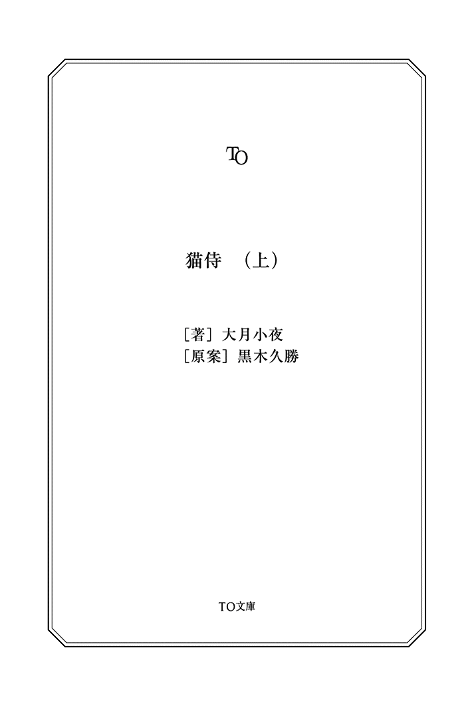

| 猫侍（上） (TO文庫) | |
| 大月小夜 & 黒木久勝 | |
| (2013) | |
元・加賀藩剣術指南役、斑目久太郎。かつて「まだら鬼」と恐れられていた剣客は、貧乏浪人として長屋でひとり静かに暮らしている。 ある日、呉服問屋の番頭・佐吉から主人を虜にしている白猫『玉之丞』の暗殺を依頼されるが、化け猫と聞いたその猫はたいへんに愛らしく、斬り殺すことができずに連れ帰ってしまう。斬り殺したと嘘をつき、玉之丞と暮らしはじめる久太郎だが、初めての猫との暮らしは案外に大変で......。

猫侍（上）
時は江戸。
第五代将軍、徳川綱吉によって『生類憐れみの令』が出される少し前。
ほおずき長屋に一人の浪人がいた。
元加賀藩剣術指南役、名を斑目久太郎。
部屋に一人、座して精神統一する姿は侍と呼ぶに相応しい気迫。
手にしている刀は彼がどんなに貧しく、ボロを纏うようになっても意地で手放さない魂と呼ぶべき物。
そんな刀と己が一直線に繋がるかのような瞬間。閉じていた目をカッと見開き、立ち上がるや否や抜刀する。
剣も自分も絶好調だ。無双一刀流免許皆伝の腕は伊達ではない。
誰が云うたか、火炎に立つ鬼の如し。
ついた呼び名は『まだら鬼』。
しかしこの鬼、残念なくらい腹が減っていた。
バシリと決まった居合いを霧散させるように、切なげに腹の虫がぐぅと鳴く。
久太郎は抜いたばかりの刀を鞘に収めた。
故あって貧乏浪人などしているが、剣の道に身の置く所なし。
どんなに薄い壁の長屋であろうと、傷みきった畳の上であろうと、ただ自分は剣を極めるために生きる......生きられたらいいなぁと思っていた。
再び腹が鳴る。
生きるためには食わねばならないのだ。
久太郎はため息をついて、箪笥の上に置かれた白い陶製の招き猫の置物を手に取った。
貯金箱になっているそれを逆さにして底の蓋を取り、覗く。
あまりの空っぽ具合に切なくなって、心の準備をしてから振って銭を出してみた。
落ちて来たのはわずかな額の銅銭だけ。
念のためもう一度覗くとさっきより切なくなった。
八つ当たりするかのように招き猫を転がすと、招き猫は押入れの戸にぶつかり所在なく揺れた。その押入れの中の物すらほとんど質に入れて、すっからかんなのだからどうしようもない。
出したばかりの銭を久太郎は無言で懐にしまった──はずだったが、何故か銭は床に落ちた。まさかと思って懐を探ると穴が開いていた。
物事上手くいかない時はとことん上手くいかないもので。
「あ！」
と久太郎が声をあげたのも虚しく、落ちた一枚はコロコロと転がり、壁と箪笥の隙間に隠れてしまった。追いかけ、這いつくばって手を伸ばすが届かない。
（長いものがあれば......！）
一瞬、刀で取れるかもと考えるが、これは使っちゃダメだろう。仮にも武士の魂だ。
精一杯の自制をきかせ、久太郎は箒を使ってもう一度隙間を漁ってみた。
「くぅっ......」
どんなに探っても貴重な銭は出てこない。
それどころかトントンと戸が叩かれる音がした。
（まずい！）
久太郎が立ち上がるや否や、ガラリと戸が開き大家が入ってくる。
「ごめんなさいよ。おや......お掃除ですか？」
かろうじて〝銭を追い、這いつくばる〟という醜態を晒さずに済んだが、手は箒を握ったままだった。今さら手放すのもどうかと思い、久太郎は無言で畳を掃いた。
「綺麗に使ってくださるのはこちらとしても嬉しいんですがね、お侍さん。今日という今日は払ってもらいますよ。たまった家賃、三ヶ月分。しめて......」
大家によってパチパチパチッと弾かれる算盤の音が久太郎に妙な圧力を与える。
言われた額は隙間に転がった銭を拾えたとしても払えるものではなかった。
「仕官が叶えばまとめて払う」
絞り出すように久太郎が言うと、大家が素早く返した。
「そうおっしゃってずいぶん経ちますけどね」
返す言葉がなくなり、久太郎はじろりと大家に目をやる。
すると大家は、「な、なんですか？」と狼狽して言葉に詰まった。
久太郎は生まれつき顔が怖かった。
特にその目つきを恐れる者が多く、視線をやるだけでも人によっては睨んだと受け取る。それが今回は良いように作用していた。
これ以上追及されても困るので、久太郎はぶすっとしたように箒を動かし言う。
「掃除中だ」
「......これ以上待てませんからね。今月中に払ってもらえないなら出て行ってもらいます」
大家はしぶしぶといった調子だったが、それでも帰ってくれた。
怖い顔の勝利だった、が。
（今月中か......）
問題は変わっていない。結局は銭だ。
久太郎は一人になったのを確認し、再び箪笥の隙間の銭を取ろうとしゃがみこむ。
（世の中には、銭より大事な物がある。父上が今わの際で言った言葉。それは剣の道を究めることだとばかり思っていた。......剣を究めるなら、これを剣で取るのもありじゃ......いや、それは流石にないか。......しかし）
ぐっと久太郎が手を伸ばし、這いつくばった時。
戸が少しだけ開いた。
大家だった。
目が合い、久太郎は誤魔化すように腕立て伏せをした。これはさすがに誤魔化せていない気がするが仕方がない。しばしの間の後、大家はそっと戸を閉めた。
脱力して久太郎は突っ伏し、呻くように言う。
「仕事がない」
相槌を打つように三度目の腹の音が鳴った。このままでは本気でまずい。
（......腹が減っては戦は出来ぬというしな。まずは食糧調達だ）
久太郎は銭を諦め、魚籠を手に長屋を出た。
「いらっしゃい、いらっしゃい！ 南蛮渡来のどなつぼうだよ！ 美味しいよ〜！」
屋台を切り盛りする若い娘の声を聞き流しながら、久太郎は橋のたもとで釣り糸を垂れていた。
川は静かに流れている。澄んだ水面に魚の影が見え、期待が高まった。
しかし橋を渡る子供たちの足音に驚き、影は遠ざかっていく。
もう少しだったのに、と悔しくなって子供らを見ると、彼らは無邪気にどなつぼう屋に並んでいた。前の子から順に狐色をした棒状の揚げ物を渡され、嬉しげに走り去る。
（あれが、どなつぼう......）
久太郎はじっと傍にある自分の食糧を見た。魚籠の中ではザリガニたちが数匹わらわらとしているだけだった。
（これが格差というやつか）
せめて魚を、と険しい表情で釣り糸を睨む。
「そこのお侍さーん、いかがですか？ どなつぼう美味しいよ。出来たてほかほか。ほっぺが落っこちるよ！」
どなつぼう屋の娘の声を完全に無視し、集中。釣り糸と自分が一直線に繋がるような錯覚──あれ？ 俺は釣り師じゃなくて侍だよな──と思った矢先、大きく竿がしなった。
大物が釣れるなら、今この瞬間は釣り師でもいい、と久太郎は目を輝かせて竿を引き上げた。大きな、ザリガニだった。
娘の「すごーい、大物だね！」という明るい声に、
（俺は魚を釣りたいんだ）
と、ついイラッとして睨む。娘が「コワッ」と短く言った。
こんな騒がしい場所で糸を垂れても釣れる気がしないので、久太郎は帰ることにする。もちろんザリガニの入っている魚籠も忘れなかった。
人の行き交う往来を久太郎は歩いて行く。
食べ物の匂いのする店からはなんとなく距離を取るようにしていた。空腹に匂いの誘惑は辛い。しかも買い食いするような銭はないときている。
食欲がどうしようもなく湧きあがると、こっそり手にぶら下げているザリガニの匂いを嗅いでみた。これでだいぶ、いや、かなり食欲が抑えられる。
そんな歩き方をしている久太郎の鼻が先ほど嗅いだような香ばしい匂いを感じ取った。
（あの娘、移動してきたのか？）
匂いの方を見ると、二人の男が立て札を見ていた。
手には先ほどの娘が売っていたどなつぼう。
（別に食いたいわけじゃない）
自分にそう言い聞かせ、男たちが見ている《根倉藩 仕官募集》の立て札を読む。
すると近くにいた一人が久太郎の魚籠を見ながら、わざとらしく鼻をクンクンと鳴らしながら言った。
「なんか臭いな。なぁ、橘」
橘と呼ばれた方の男はどなつぼうを齧ってから続ける。
「まずくなってきた」
（ならよこせ）
その言葉を飲み込み、久太郎は関わるまいと立ち去ることを選ぶ。無用な争いはしないに限るだろう。
けれどニヤニヤと薄ら笑いを浮かべる二人はそうは思わないらしい。
「ザリガニ侍」
と、笑い合った。
（好きでザリガニ食ってんじゃない）
久太郎は振り返って睨んだ。これしか釣れないのだ。
そんな久太郎の眼力に二人から笑みが消えた。
「目ヂカラやべぇ」
「強面度半端ないな。......だが、所詮顔だけだろう」
そう言いながら、橘がずいと一歩前に出た。
「怖い顔しても説得力ないぞ。ザリガニ担いで仕官しようってのか？」
（お前らには関係ない。そもそも仕官したらザリガニを担ぐ必要はなくなる）
久太郎はどこかずれたことを考えながら睨み続けた。
「ご遠慮願えんかねー。怖い顔の人は」
（怖い顔、関係ない）
橘の馬鹿にするかのような言い方にどんどん久太郎の眉間のシワが深くなる。
もう一人の「怖い顔は関係ないだろ」という言葉に、わずかに顔の力が緩んだ。
（その通り）
うん、うん、と久太郎は心の中で頷くが、橘は容赦なく言った。
「だが、臭い奴は我慢ならん。我らの藩に悪臭が漂う」
これには久太郎もカチンとくる。しかし先に手を出したら負けだ。
久太郎は踵を返した。
「おい、竹下、やっちまえ」
背後から声が聞こえ、気配を感じて反射的に避けた。
魚籠がぼたりと地面に落ちる。
紐が切られていた。
爆笑する二人。片方の手には小太刀があった。こちらが竹下ということだろう。
（なら言い出したのはあっちだな）
久太郎が橘に向けて抜刀した。白刃が風を切り、二人は一瞬で黙る。その手が刀に向かう頃には久太郎の刀はすでに鞘に収まっていた。
橘のどなつぼうの上半分がポタリと地面に落ちた。
（勿体ないことをした）
心の中でどなつぼう屋の娘に詫びながら、逃げ出そうとしていたザリガニたちを魚籠に戻して抱えて帰ることにする。
茫然と立ち尽くす男たちに今度こそ背を向け歩き出した。
その現場をまた別の者が見ていたのも知らずに。
長屋に帰った久太郎は裏庭でパチパチと爆ぜる火を見ながら、目に沁みる煙と戦いを始めた。真剣な眼差しで、七輪の網の上に置いたザリガニを見つめる。
生臭かったザリガニは、段々と香ばしい匂いに変わり、もう少しで食べ頃になるような気がした。
戸が開いたのはそんな時だった。
「どうもー、ご無沙汰しております」
戸を叩きもせず入ってきたのはよく見知った薬売りの五郎だ。久太郎は面倒臭いのが来たと顔をしかめる。今は五郎よりザリガニだ。
所々に穴が開いた団扇で久太郎は七輪を煽ぎ続ける。
五郎はそれが気になったのか、居間を突っ切り裏庭までやってきた。
「おっ、伊勢海老......」
と言いかけ、近くで七輪を覗き込んで「あ、ザリガニですか」と残念そうに言った。
（伊勢海老なんて買う金あるわけないだろう）
むっとしながら久太郎は五郎を睨みつける。しかしこの〝睨み〟も五郎は慣れてしまっていて大概効果がない。「またそんな怖い顔をして」と簡単に受け流して、二通の手紙を懐から取り出した。
「ほら預かってまいりましたよ。これが奥様ので、こっちがおハルちゃんの」
言われた久太郎は受け取ろうとせず、作業を続ける。
しばし待ってから五郎は諦めたように、そっと手紙を縁側に置いた。
「確かにお渡ししましたからね」
さてと、と久太郎の部屋の棚から勝手に薬箱を出し、無くなっている物の確認と補充を始めた。
「薬などいらん」
「腹薬ガッツリ無くなってますけど」
言い返され、むすっとしていた久太郎は何も言えなくなる。強がってみたが、実際腹薬は無くなっていて、おそらくこれからも一番使うものだった。
五郎は手を止めずに世間話のように言った。
「奥様、手紙の返事が欲しいって仰ってますけど......」
様子を窺うように訊き、しばし久太郎が黙っているのでさらに続けた。
「まだ仕官の口、決まらないんですか？ 天下のまだら鬼も形なしですな。傘貼りでも寺子屋の先生でも何でもやったらいいじゃありませんか」
おどけ半分、心配半分という口調の五郎だが、久太郎にとっては切実な問題だった。
何も言えずにいると、五郎はため息をついて補充の終わった薬箱を棚にしまった。
「とにかく、手紙の返事くらい書けるでしょ？ 『元気でやってる』ってだけでもいいんですから」
（返事も何も......書けるわけがない）
箪笥の中にある手紙の状態を思いながら久太郎は気まずくなって背中を向けた。
五郎がため息をつき、商売道具の詰まった行李を背負うのが気配でもわかる。
「じゃ、また寄ります。お腹、冷やさないようにして下さいね、お大事に」
そう言って五郎はそっと部屋を出て行った。
一人になった久太郎は七輪の火を始末して、焼き上がったザリガニを縁側で食べるが焼いている途中は香ばしかった匂いも、口の中に苦く広がるばかり。久太郎は縁側に置かれた手紙に視線を落としていた。
流麗な字で『斑目久太郎殿』と書かれた手紙は妻のお静から。
その字を真似ようとした努力が見受けられるが、拙さと不器用さがまだ残っている『父上様』という手紙は娘のおハルから。
久太郎はどちらの手紙も封を切らずに、ただ表書きを見ていた。
ザリガニの味は最後までよくわからないまま食べ終わり、思い切ったように手紙を手に取り、箪笥に向かう。
小さな引き出しを開けると今までに届いた二人からの手紙が詰まっていた。
そこに先ほど渡された手紙も他の物と同様、読まずにしまう。
（読んでいないのだから、返事など書きようもない）
それが久太郎なりの言い訳だった。もっとも〝何故読まないのか〟という問いからはいつの頃からか逃げるようになっていた。
久太郎は引き出しを閉めようと押す。けれど別の手紙が引っかかって上手くいかなかった。引っかかっていた手紙を引っ張りだすと、それは他とは違う字で『紹介状』と書かれていた。
剣術の恩師が、久太郎を案じて書いてくれたものだ。
（また行ってみるか）
久太郎はその手紙だけを懐に仕舞い、部屋を出た。
「頼もう！」
根倉藩江戸藩邸──いわゆる上屋敷。
立派な門の前に立ち、久太郎は声を上げる。少し声が上ずってしまって失敗した。周りを見回すと幸いにも誰もいなかった。
気を取り直して、息を整え、ついでに心の準備をして、もう一度。
「頼もう！」
今度はいい感じに言えた。が、反応はない。
（もう一度言うべきか？ だが何度も叫ぶと焦っているみたいだから、このまま少し待とう）
それでも屋敷からの反応はまったくなかった。
（誰にも見られてないし、このまま帰るのもアリ......か？）
若干心が折れかけ、どうしようかと辺りをキョロキョロ見回す。
その時ギィと音を立て通用門が半分開いた。顔を出したのは門番らしき二十歳ほどの男。
（確か、茂平だったか？）
久太郎は何日か前の記憶を辿る。何度目かに訪れた時、顔見知りになったので聞いておいた名前だった。
茂平は久太郎の顔を見てため息をつく。
「またあんたか」
逆に久太郎は見知った顔の登場に折れかけていた心を立て直した。
「一度お取り次ぎ願いたい」
「お取り次ぎしませんよ」
茂平に即答され、今度は懐から持って来たものを取り出す。
「ここに紹介状がある」
それを聞いて、茂平の態度が少し変わった。
「ああ〜最近多くてね。ニセモノ持って来る浪人。さ、帰った帰った」
余計に蔑ろにされた。こんなはずでは、と久太郎は慌てて取り繕う。
「いや、ニセモノではない。よく見て......」
「はいはい、もう来ないでね」
茂平はさっさと顔を引っ込めた。
バタンという通用門の閉まる音で久太郎の心は完全に折れた。
（......帰ろう）
とぼとぼと肩を落としてその場を後にする。
屋敷町は、行き交う者も少ない。すれ違うのは皆、雇われている侍か、御用聞きかで、だれもかれも職のありそうな男たちだった。
先ほどの茂平も久太郎より若いのに門番という仕事をしているのだ。
（俺の努力が足りないのか......）
なんとなく久太郎は肩身が狭くなったような気がした。けれど五郎が言うような、傘貼りの仕事や寺子屋の先生をしている自分は想像がつかない。
（仕事を選びすぎなのか......いや、でも俺は......侍だし）
ぶつぶつと考えながら歩いていると近くの屋敷から「にゃー」という鳴き声が聞こえた。
垣根越しに覗いてみると、畳の部屋で白猫が鞠を転がして遊んでいる。
その部屋に初老の男が何かを持ってやって来た。
「は〜い、いっぱいお食べ〜」
猫なで声で言う男の手元を久太郎は凝視する。
（いや、そんな、馬鹿な......あれは）
一口で食べられるように小さく握られた白米、その上にのった艶やかな切り身。
（シースー!?）
寿司、猫に寿司、と衝撃が久太郎を貫いた。
白猫は目の前に置かれた餌というには豪華なそれを、目を細めながら口にする。食べ慣れたかのように躊躇いなく、特に上の切り身には食い付きがいい。
時々首輪に付いている鈴が優雅にチリンと鳴った。
対抗するかのように久太郎の腹がまた「ぐぅ」と鳴る。
（お、俺も今日、シースー食べたし！）
ただし米はなく、ザリガニ。それも腹いっぱいと言うには遠い量の。
強がるだけ虚しくなった。
（これはもう俺の努力とか関係ない気がする）
納得のいかないまま久太郎はまた歩き出した。
（あの猫が羨ましい......）
つい未練がましく何度か屋敷を振り返った。
「あのー、もし。お侍様。もし」
久太郎がその屋敷から少し離れた頃、背後からそんな声が聞こえた。
（お侍様か、いいな〜。呼ばれてみたいな〜）
寿司の衝撃でしょげている久太郎は、とぼとぼと歩き続ける。
「お侍様ってば！」
ぐいと着物を引っ張られて久太郎は歩みを止められた。
（俺が〝お侍様〟!?）
驚いて振り返ると知らない男がいた。年の頃は先ほどの門番、茂平と同じほどだろう。その商人らしき男を見て、なんとなく久太郎は不機嫌になった。
「お侍様に折り入ってお話したいことがありまして......」
話し出した男に無愛想な声で「なんだ」と短く返す。
「ここでは何ですので......」
「ここで話せ」
久太郎がより強い口調で言うと、男がちらちらと近くの屋敷を気にしながらもう一度言った。
「ここでは何ですので......」
「............」
もういい、と久太郎はむすっとして歩みを進めようとする。
追いすがるように背後で男が言った。
「先ほど菓子を斬ったあの腕前。お侍様を剣の達人とお見受けし、お願いがございます！」
そして止めの一言。
「お礼はたっぷりさせていただきます！」
久太郎の足がぴたりと止まった。
木々が生い茂り、隠れやすい木陰も多い神社がある。密談には持ってこいの奥まった場所で、久太郎は男の話を聞くことになった。
「私、呉服問屋・加賀屋の番頭、佐吉と申します。その......大きな声では申し上げにくいのですが、内々に始末していただきたいものが......」
佐吉のぶっそうな言葉に久太郎は眉をしかめる。
（嫌な予感しかしないな）
しかしお礼は気になると、続きを聞くことにする。
「私の知り合いに喜助ってやつがおりまして」
そう言いだした佐吉は急に芝居でも始めるかのような口調で続けた。
「雨の日に仔猫を見つけて、つい情にほだされて連れ帰ったんですよ。それからというもの、喜助は家に籠ったきりになっちまいましてね」
声をひそめる佐吉の神妙な様子に、久太郎は怪談の始まりを感じた。
「喜助を心配したおっかさんが様子を見に行ったんだけども、戸を叩いても返事がない。おっかさん、思い切って戸を開けてみると、中からシャッと飛び出した猫に左目を引っ掻かれ......。それでも残った右目で見た光景の恐ろしさときたら、痛みも吹っ飛ぶくらいで」
「......何を見た？」
自分の左目を押さえたくなるのを堪えながら久太郎は訊いた。猫に目を引っ掻かれる痛みなど相当のものだろう。それを超えるもの。気になる。
佐吉は声を落として続けた。
「抜け殻みたいに横たわる喜助の腹の上で、尻尾が八つに分かれた大化け猫が赤い目を光らせ、牙をむき......」
「............」
久太郎はごくりと唾を飲み、続く言葉を待つ。
しかし佐吉はがらりと声を変えて明るく言った。
「とまあ、そんな話を聞いたもんですから私も心配になっちゃって。うちの店の猫のことが」
（おい、喜助とおっかさんは？）
続きを求める久太郎をよそに、佐吉の話は次に移る。
「お侍様もご覧になったんじゃありません？ 先ほど垣根越しに覗いていたでしょう。白猫のいる屋敷」
（ああ、シースーの）
言われて久太郎は思い出そうとするが、猫も人もさして記憶に残っておらず、結局寿司のことしか思い出せなかった。
寿司しか見ていないとは言えず、久太郎はじっと佐吉の話に耳を傾ける。
「私の主人の与左衛門は、それはそれは厳しいお人で、仕事一筋、冗談ひとつ言わないカタブツです。それが一月ほど前に玉之丞って猫を飼い始めてからというもの、まるで幼子のようで......あんな旦那様は見たことがない。何やら気味が悪くて。みんな言ってますよ、あれは、玉之丞が旦那様の魂を抜いているに違いないって」
なんとなく思い出して来た気がした。
（確かに腑抜けた......いや猫にだから、ふニャけたとでもいうか......）
久太郎は猫に寿司を与えていた時の男の顔を思い出す。あれがカタブツというのなら確かにだいぶ魂を抜かれているかもしれない。
「手遅れになる前に何とかせねばと思っておるのですが、いかんせん〝化け猫〟ですから」
「馬鹿馬鹿しい」
久太郎は言ったが、化け猫の姿を想像していた。
しかし、佐吉は「怖くないのですか？」と訊いてくる。
それには「怖くないならぜひ助けて！」という期待が含まれていた。
（怖い）
侍の自分がそんなことを言うわけにもいかず、久太郎はぎろりと佐吉を睨む。
佐吉はそれを「侍がそんなもの怖がるわけないだろう」とでも受け取ったらしく、嬉々として久太郎に頭を下げて言った。
「お侍様、どうか玉之丞を斬っちまってください」
（無理！）
「これは紛れもない妖怪退治です。お侍様のような強いお方に相応しいお役目！ どうか、お助けください！」
どんどん下がって行く佐吉の頭に、久太郎はますます断れなくなっていた。
しかし答えは出ている。
（ぜったい、無理）
そっと立ち去ってしまおうと動きかけた時、佐吉が言った。
「二両......いや三両！」
日が沈み、町は闇に抱かれ、人々もすっかり眠りについている頃。
久太郎は行灯を手にこっそりとシースー屋敷、もとい、加賀屋の屋敷の裏口に来ていた。
『子の刻、裏口の扉を開けておきますので、そこから入って下さい』
神社で佐吉はそう言った。
後払いということでまだ金を受け取っていない久太郎は、佐吉の本気さを少し疑っている。
佐吉の気が変わっていることを祈りつつ、周囲に人がいないのを確認し、そっと戸を押してみた。
普段なら閂が掛かっているのだろうが、難なく開いた。
（本気だった......）
後に引けなくなった久太郎は、音を立てないよう屋敷の中に入る。
『庭を通ると猫の部屋があります』
佐吉から聞いた順路で進む。
（暗いの怖い。主人とかも出てきませんように）
久太郎は祈るように深呼吸し、景気付けがてら心の中で歌ってみる。
（天下の妖刀〜ひと太刀で〜広くその名を轟かせし〜百戦錬磨の剣さばき〜）
少しずつ元気が出てきて、目も暗闇に慣れ始めた。そっと襖を開くと、部屋の中央にふかふかの座布団が敷かれ、丸まるようにして小さな何かがのっている。
〝化け猫〟玉之丞。
久太郎は行灯を畳に置いて、すっと刀を抜いた。
（斬るべし、斬るべし、斬るべし！ 無敵のまだら鬼〜）
間合いに入り、殺気を込めて刀を振り上げる。
その時、チリンと鈴が鳴り、玉之丞が久太郎を見上げた。
澄んだまぁるい瞳が静かに久太郎を見つめ、瞬きする。
玉之丞は、くぁ、と欠伸をして起き上がり前足をくーんと突き出した。腰がしなやかな曲線を描いた綺麗な伸びだった。
（............）
久太郎はそのまま固まり、玉之丞を見続ける。
行灯に照らされて、壁に猫の影が伸びる。その影も到底、化け猫には見えなかった。
玉之丞は座布団からぴょんと降りて、今度は後ろ足をぷるぷると震わせた。そして座り込み、前足を舌で舐めて丁寧に顔を洗う。
どこまでも危機感がなく、自由そのものだった。
（し、死に化粧だ。待ってやろう）
刀を振り上げた状態で固まっていた久太郎は、腕が震えだすのを感じていた。
そんなことを露も知らない玉之丞は、久太郎の足元を嗅ぎまわり、あまつさえ甘えるように体をすりつけて来る。
玉之丞の艶やかな毛が脛の辺りに触れ、久太郎はむず痒くなった。
「おい」
堪らず久太郎は玉之丞に声をかける。
玉之丞が止まって顔を上げた。
何を考えているかわからない、けれどまさか自分がこれから殺されるなどと思ってもいないであろう、まっすぐな瞳で、じっとこちらを見つめる。
（化け猫......こいつは化け猫）
久太郎は自分に言い聞かせ、刀を振り下ろ──そうとしたが出来ない。
「くっ......」
ちょっと刀を下げれば終わるのに、と頑張る久太郎の目を見ながら、玉之丞が「にゃあ」と鳴く。その声で久太郎はハッとなった。
（こ、こうやって化け猫は人を誑かす......のか？ よし、目を見るからいけないんだな）
深呼吸して、目を逸らした。
それでもちらちらと玉之丞の長く白い尻尾が揺らめくのが見えるので、久太郎はもう一度刀を構え直し、目を閉じた。
（悪く思うな）
玉之丞が「にゃあ」と鳴いた場所に向かって今度こそ刀を振り下ろす──
鈴が畳の上でひと際大きな音を立てた。
◆
「玉之丞、玉之丞！」
加賀屋の主人、与左衛門は作りたての餌を持ったまま愛猫を捜していた。
普段から襖や押入れなどにわずかな隙間が開いていると、玉之丞はどこにでも入り込んでしまう。それでも食事をしていない玉之丞が一度も与左衛門の前に姿を現さないのは奇妙だった。
与左衛門が次第に必死な形相を見せる。
そしてそれは猫部屋の床の間を見た時、決定的になった。
『天誅 化け猫に死を』
そう書かれた紙が張り付けられていた。すぐ下には見慣れた首輪が無残に斬り裂かれ、畳に鈴が冷たく転がっている。
与左衛門はついに声を上げて泣き崩れた。
そんな主の様子を確認した佐吉は、そっと屋敷を抜け出した。
◆
朝の長屋は何かと騒がしい。外では鶏の鳴き声が聞こえ、隣近所に住む女たちが共有井戸から水汲みがてら立ち話をする。内容は亭主の愚痴だったり、どこそこの何が安くて良いだの他愛もないことばかり。
そんな中に久太郎は入って行ける気がしない。もとい、入るつもりもないので、静かな自室で黙って正座をし、精神統一をしていた。
（そろそろ来るか......？）
ちらりと薄眼で昨夜使用した筆が片付いているか確認する。問題なかった。
時折、押入れからがさごそと動く気配を感じるが、これは集中しなければ聞こえないので大丈夫だろう。
そうしているうちに、外からタタタッと草履の走る音が聞こえ、久太郎は身構える。
「すみません」
佐吉の声だ。返事もしていないのに佐吉は戸を開け入って来た。
「いや〜、化け猫退治、本当にありがとうございました。これで旦那様も目を覚ましてくれると思います。約束通り三両は明日お渡しします。が......」
笑顔を抑え込むようにしていた佐吉の歯切れが途中から悪くなる。久太郎の部屋を見渡しながら言った。
「骸はどちらで？」
（やはり気になったか）
あの張り紙をして、誤魔化せるかと思ったがそうもいかないらしい。
久太郎はぼそりと告げた。
「......葬った」
「どこに？」
「信用できぬと言うのか？」
むっ、と久太郎は持ち前の眼力を全力で活用する。
三両を手に入れるための正念場だ。
「いえいえ、そういう訳では御座いません。ただ相手は化け猫ですから、息を吹き返すやもしれませんので......」
ビビりながら言う佐吉に、久太郎は仕方なく席を立つ。それだけで佐吉が「ヒッ」と悲鳴を上げた。少し脅かし過ぎたのかもしれない。
久太郎はそんなに自分は怖いだろうかと微妙に凹みながら、押入れを少しだけ開ける。先ほどから動いていたものが出てこようとするのを、佐吉から見えないように押し返し、用意していた物を取り出し、急いで閉めた。
佐吉にしっかり見せつけるようにして重々しく言う。
「猫壷だ」
「ねこつぼ？」
くるりと壷を回し『悪霊封印』の札を見せ、ドンと佐吉の前に置いてやった。
恐る恐る佐吉が札に向かって手を伸ばすので「触るな！」と少しきつめの口調で言った。
「玉之丞はこの中に？」
「決して開けてはならん」
きっぱりと言いながら、久太郎は内心ドキドキしていた。
「開けるとどうなるんで？」
（酸っぱい目に遭う）
中の状態を知っている久太郎は黙って目を細める。
それを佐吉は良からぬことが起きるのだろうと解釈したらしく、ごくりと唾を飲んだ。
「しっかり管理しろ」
久太郎はそう言うと、佐吉は恐る恐る壷を抱えて、
「へ、へい。あ、ありがとうございました」
と出て行った。
（乗りきった......）
久太郎は脱力する。
静かになった部屋にまたがさごそと音が聞こえる。
音の主はとうとう押入れの戸をわずかだが動かし、隙間から白い手をにゅっと出した。
そうして頭を強引に出して......頭が出れば体も出すのは容易いらしく、するりと部屋に出てきて、満足そうに「にゃー」と鳴いた。
首輪こそしていないが、それは紛れもなく玉之丞だった。
「お前のせいで俺は嘘をついたぞ」
効果もない『悪霊封印』なんて札を作ったり、斬ってもいない猫を斬ったと言ったり。
久太郎は小賢しいことをしていると自分でも思っていたが、
（ふん、化け猫が怖いからじゃないぞ。『猫を殺せば七代祟る』というではないか。斑目家の子孫を思いやってのことだ）
致し方ない。
そんな久太郎のことなど知らない玉之丞は、押入れより広い所に出られて嬉しいのか、喉をごろごろと鳴らしながら、畳に背中を擦りつけてくつろいでいた。
（まあ、命だけは助けてやるか）
ふっ、と久太郎が目を細めた時。
「すみません」
と外から佐吉の声が聞こえ、久太郎は慌てて玉之丞の首筋を掴み、懐に入れた。
玉之丞が驚いて「にゃっ」と鳴くので「しーっ」と小声で言い返す。
戸が開いて猫壷を持ったままの佐吉が顔を見せた。
「こいつ、化けて出たらまた斬ってくださいね」
「......任せておけ」
そんなことはないだろうけど、と心の中で付け足し、戸が閉められ足音が聞こえなくなってから、玉之丞を懐から出した。
玉之丞は久太郎を見て「なぁ」と不服気に鳴いてから部屋の隅の匂いを嗅いだりしながらうろうろしていた。
そんな様子を久太郎は「やれやれ」と見守りながら呟く。
「化け猫も 和む我が家の 心地好さ 招きよせるは 福か祟りか......なんてな」
この時、何故玉之丞がうろうろしていたか、久太郎にはまだわからなかった。
翌朝、いつものようにどこぞの寺から聞こえてくる鐘の音で久太郎は目を覚ました。
薄い煎餅布団を軽くたたみ、木刀を手にして裏庭へ出る。
（強くなりたければ時間を無駄にするなかれ。亡き父上の教えだ）
そうして日課である朝の素振りを始めた。
木刀を上段に構え、気合を込めて振り下ろす。
それを二度、三度と繰り返すうちに──込める気合がなくなった。
（......眠い）
ぴたりと木刀を止め、欠伸を噛み殺す。
（無理をして、ケガでもしたら本末転倒だからな。......もうちょっとだけ）
と部屋へ戻り、再び布団を敷き直して潜り込む。
（幸せの二度寝......）
心地好さに意識を飛ばしかけた時、押入れの襖がガタガタと音を立てた。
玉之丞だ。
中の物を質入れし、広くなった押入れは、玉之丞を隠しておくのにちょうど良かった。
おとなしく寝ていたようだが、やはり朝になると出てきたくなるらしい。
玉之丞は開けるコツを掴んだようで、昨日より短時間で襖を開けて出て来た。久太郎の布団の上にちょこんと座り「にゃー」と鳴く。
「......うるさい」
久太郎はむにゃむにゃと布団の中に潜り込んだ。すると布団に、じわり、と謎の温かさが広がった。
まさか、と目が覚め、慌てて久太郎はその源を見る。
その黄色いシミは玉之丞から広がっていた。
「貴様！ 恥を知れ！」
思わず怒鳴ると玉之丞は驚いて押入れの中に走って逃げた。
（昨日、妙にうろうろしていたのは厠を探していたのか）
久太郎は頭を抱えて、布団を干すまでの段取りを考える。だんだんと面倒になって来て不貞寝したくなるが、肝心の布団がこれなのだからしょうがない。
ゆっくりと重い腰を上げた。
裏庭で、汚れを落とした布団を干しながら、久太郎は怒りを感じていた。
（まるで俺が寝小便したみたいじゃないか）
居間の方を振り返れば、もう先ほどのことなど忘れたかのような玉之丞がのんきに前足で顔を洗っていた。
「くっ......」
悔しげに呻くと、何やら視線を感じた。見ると柵の向こうから鼻を垂らした近所の子供と目が合う。子供は久太郎の布団を指さし言った。
「それ、おっちゃんの布団？」
「あ、ああ......」
ものすごく気まずくなりながら久太郎が答えると、子供はグッと親指を立てて笑った。
「大丈夫、オレもまだする！」
その意味を久太郎は一瞬遅れて理解した。
「ち、違う。これはおっちゃんの布団だが、これをしたのはおっちゃんではない！」
「じゃあ、そういうことにしておくね」
「おい！」
久太郎の言葉も虚しく、子供はさっさと自分の家へと入って行った。
（誰にも言わないことを祈ろう......）
しょんぼりと肩を落とし、久太郎も部屋に戻る。
この気分をどうにか変えようと、今度は腕立て伏せをすることにした。
畳の上で伏せると、玉之丞が久太郎の顔の匂いをふんふんと嗅ぎに来て、目線が同じになったのだと気がつく。
（天井、意外と高いんだな）
この長屋も捨てたもんじゃないと思いながら低い姿勢のままで鍛練を始める。使い慣れた畳のボロボロの荒れ具合に妙な落ち着きを覚えた。
「二十三、二十四、二十五......」
体が温まって来た頃、久太郎は玉之丞の姿が見えないことに気がついた。
どこ行った、と思った矢先、ぴょんと背中に軽い負荷が掛かる。
油断していた久太郎は思わず潰れた。
「ぐぅ」
と言ったのは久太郎か、腹の虫か。
いずれも集中力を削ぐには十分だった。
（いつもは百回だが武士とて腹が減っては戦ができん。今日はここでやめるのもアリだな）
そう思った時、トントンと戸が叩かれた。
（マズい）
急いで久太郎は玉之丞を自分の背中から降ろす。
「隣りに引っ越して来た若菜です！」
元気な若い娘の声が聞こえ、言い終わるや否や戸が開かれる。
間一髪、久太郎は玉之丞を懐に入れていた。
若菜と名乗った娘は昨日どなつぼうとやらを売っていた娘だった。若菜は久太郎の顔に驚いたように目を丸くして呟く。
「あ、ザリガニ」
（どいつもこいつも）
久太郎はじっと、得意の睨みを利かせた。しかし若菜はまったく気にした様子もなく、
「これ、引っ越しのごあいさつで〜す」
と笑顔で皿に乗った二本の棒状の揚げ物を差し出した。
それは紛れもなくあの屋台で売られていた、子供たちのおやつであり、失礼な侍の手から斬り落とした〝どなつぼう〟だった。油で揚げた菓子から、香ばしい匂いがする。
本音を言えば食べてみたいと思っていた。
が、それを言っては武士としての格好がつかない。
久太郎は絞り出すように「いらん」と言った。
「でも」
「武士は施しなど......」
その時、懐の中で匂いを感じ取ったらしい玉之丞がもぞりと動いた。柔らかい毛が腹を撫でてむず痒くなる。
久太郎は堪らず「んふっ」と鼻から抜けるような声を上げ、身をよじった。
「んふっ？」
不思議そうに若菜が首を傾げる。
「いいからさっさと帰れ！」
もぞもぞと外に出たがる玉之丞を抑え、久太郎は叫ぶように言った。
すると若菜はけろりと「あ、じゃあここに置いていきますね〜」と皿ごとどなつぼうを置いて、外に出た。戸を閉める前に、
「これから仲良くしようね！ お侍さん！」
と言うが、くすぐったい久太郎はそれどころではない。黙って表情を崩さないことに全力を尽くした。
「じゃあ！」
そうして若菜が戸を閉め、去って行く足音を聞き、やっと懐から玉之丞を出した。
玉之丞は置かれていたどなつぼうにまっすぐ向かい、にゃもにゃもとご機嫌に食べ出す。
「おい！」
少しは空気を読んでくれと叱ろうとするが玉之丞は聞きやしない。
（これのどこが化け猫だ？）
久太郎がため息をつくと、ぐぅと腹の虫が賛同した。
（くれたなら素直に食うか）
そうして久太郎もどなつぼうを手にする。町で何度か食べている者を見かけたが、手にするのは初めてだ。表面はカリカリだが、強く押したら潰れそうな気がした。
そっと持ったまま齧ってみると、サクリと音がして中は柔らかかった。
久太郎はまぐまぐと咀嚼して、幸せそうに目を細めた。
「......うまい」
しみじみと呟いたのもつかの間。
その幸せは四、五口ほどで終わってしまった。
先に食べだした玉之丞を見ると、まだ食べている。人間とは一口の大きさが違うので減りが遅いのだろう。
（長続きする幸せの時間、か。いいなー）
玉之丞を少し羨ましく思いながら、久太郎は大太刀を腰に差した。
（さて〝玉之丞殺し〟の成功報酬を貰いに行くか）
人間生活を送る上で大事な幸せの種だ。
どなつぼうを食べ続ける玉之丞を置いて、久太郎は長屋を出る。万が一佐吉に見られては目も当てられないので、玉之丞は留守番だ。
（番は期待していないが、せめて部屋は荒らさないで欲しい......）
切実に思いながら、久太郎は佐吉と会うことになっている神社を目指す。
町はまだ開店準備中と言った感じで、商人たちは店を開ける仕度に勤しんでいた。この時間なら、神社に人は少ないはずだ。
石段を上がり、赤い鳥居をくぐる。
木々の多さか、神域ゆえか、他の場所と比べて空気が澄んでいるような気がした。
（こういう場で殺しの報酬を貰うのもバチあたりと言うんだろうか）
そんなことを考えながら空を見上げていると、「お侍様」と潜めた声で呼ばれた。
大きな神木の陰に佐吉が居た。
（何もその木の下でなくてもよかろうに）
嫌そうに近づく久太郎をよそに、佐吉は手にしていた袱紗を丁寧に解いた。
「約束の三両でございます」
中から出て来た小判を久太郎は確認し、しっかりと穴を繕った懐にしまう。これでどうにかしばらく生きていけそうだった。満足気に頷く久太郎に、佐吉がそっと耳打ちする。
「猫壷は安全な所にきちんと保管しておりますので」
「......そうか」
出来れば涼しくて暗い所に置いてやって欲しい、とは言えず久太郎は踵を返した。
「あ、そうだ」
佐吉の声に、久太郎は足を止めた。
「くれぐれも私が頼んだということはご内密にお願いしますよ」
「わかっておる」
久太郎が頷くと佐吉が「いやね」と言った。
「旦那様が犯人を捕まえるって躍起になっているんですよ。町奉行所からわざわざ同心を呼んじゃって」
「猫一匹斬った所で、罪にはなるまい」
「それが......やる気満々の同心が来ちゃいまして」
「は？」
きょとんとする久太郎に、佐吉はこほんと喉の調子を整えた。昨日のように〝その時〟を再現する。
「あれは昨日私がお侍様の所から帰宅した時の話です。涙も乾かぬ旦那様が『どうかお力をお貸し願えませんでしょうか』と二人の男たちに頭を下げておりました。しかし、しかし、男の一人、岡っ引きの八五郎はまったくもって捜査をする気がございやせん。『あのさ、じぃさんよ。人殺し、強盗、火付け、悪い奴なんかいっぱいいるわけよ。たかが猫一匹で大騒ぎするほど俺たち暇じゃねえっての』と旦那様に言いました」
そこまで話し、佐吉は「よよよ」と泣きまねをしながら崩れ落ちた。主人の与左衛門の様子らしい。
つい見入っていた久太郎は、自分が与左衛門に与えた衝撃を思い、申し訳なくなった。
佐吉の再現は続く。
「亡き玉之丞を思う旦那様は『寝込みを襲われた玉之丞は、逃げる間もなく......』とはらはらと涙を落しました。ところがどっこい八五郎。『話にならねぇ』と無情にも肩を竦めるだけ。いやー、こういう岡っ引きばかりならいいんですけどね」
佐吉は与左衛門になりきったかと思うと、八五郎になり、素の自分を混ぜ......久太郎は見事なものだな、と無表情ながらに感心していた。
「『どんなにや恐ろしかったろう、痛かったろうと想像すると......』そう仰る旦那様の声は悲しみか怒りか震えておりました。しかし冷血漢・八五郎の心は動かない！」
ベンベンッと琵琶の音が聞こえたような気がした。久太郎は思わず周囲を見たがもちろん何もなかった。佐吉はだいぶ入り込んで演技しているので、少し誇張があるかもしれない、と少し冷静に見守ることにする。
（化け猫玉之丞より、佐吉の方がよっぽど怖いぞ）
そう思いながら目の前の熱演を久太郎は黙って見ていた。
佐吉は立ちあがって続ける。
「八五郎が『わからねぇじぃさんだな、だから......』とイラつきを見せた時、それまで黙っていたもう一人の男がついに口を開いた！ 『嘗めやがって......』地の底から怒りを滾らせるかのような低いその声に八五郎も『へ？......』と思わず間抜けな声を出す。男は天誅と書かれた紙を......あ、この紙はお侍様の演出ですよね、よかったと思います。紙をビリビリと引き裂いて、それはそれは残酷な笑みを浮かべて言ったのです......」
佐吉がたっぷりと間をとる。久太郎は自分にも関わってくる言葉をごくりと唾を飲んで待った。
「『必ず見つけ出して地獄へ送り込んでやる。たっぷりとこの世の苦しみを味わわせた後でな。任せとけ、玉之丞の仇は必ずこの俺がとってやる』......と。ご清聴ありがとうございました」
ぺこりと頭を下げる佐吉に久太郎はつい拍手してしまった。
はっ、となってすぐにやめ、佐吉に尋ねる。
「その男が？」
「はい。その同心、石渡政道ってんですが、一度狙いを付けた罪人は決して逃がさない、蛇みたいな男で。その冷酷非道ぶりは江戸じゅうに知れ渡り、『水責めの政』と聞けば筋金入りの悪でもブルっちまうってウワサで......怖くないですか？」
（怖い）
なんてことに巻き込んでくれたんだと、久太郎は佐吉をぎろりと睨む。佐吉はその眼力にむしろ安心したようだった。
「まあ、お侍様ほどのお方なら、怖いものなどありませんよね」
ものすごく気楽に言った。
一方の久太郎は、
（嫌な予感が当たってしまった）
と今さらながらに〝玉之丞斬り〟を後悔していた。
そうして神社から帰って来た久太郎は、再び玉之丞に後悔させられた。
玉之丞を残して出て来た部屋は、何があったのか考えたくないくらい荒れている。くず籠がひっくり返り、中にあったものがばら撒かれ、障子の一部に至っては穴が開いて向こう側が見えている。
「あの野郎......」
湧き上る怒りと共に周囲を見渡すと「にゃあ」と押入れから玉之丞が姿を現した。
畳に寝転がろうとする玉之丞の首根っこを摘み上げ、自分の目の前まで持って来て久太郎は睨みつける。
すでに自分の悪事を覚えていない、いや、悪事とすら思っていない白猫は愛くるしいつぶらな瞳で久太郎の目を見返した。
そうなると弱いのは人間の方だ。
（くっ、なんだ？ この胸にきゅんと来る感じは......！）
鬼と呼ばれた男は、さっと目を逸らした。
その時、外から「ちょいとごめんなさいよ」と大家の声が聞こえた。久太郎は大急ぎで持ったままだった玉之丞を押入れの中に入れ、襖を閉じた。
同時に大家が入ってくる。
（間一髪）
ふー、と息をつく久太郎。
「今日こそは家賃を払って......」
と言い出す大家を睨んだ。
（頼むから声をかけてから入るまで時間をもっととってくれ）
ここを訪れる者たちはどうして自分が返事をするまで待ってくれないのだろう、と思うが、久太郎はこの長屋には住まわせてもらっている身で、一応大家にも敬意は払っている。
滞納していた分だけ申し訳なくなりながら、懐から先ほどの収入を取り出し、渡した。
すると大家は銭と久太郎を見比べながら恐る恐る言う。
「とうとう人の道を外しちまったんですか？」
「馬鹿を言うな」
失礼な、と続けて言おうとするが、まっとうな仕事だったかは久太郎も自信がなかった。
（まっとうな銭......とは言えない、か？）
少し反省する久太郎をよそに、大家は金を勘定し嬉しそうに言った。
「冗談ですよ。ついに仕官先が決まったんですね？ ......へっくしっ」
大家はいきなりくしゃみをした。それも一度や二度ではない。
見ている久太郎が不憫になるほどくしゃみをした後、やっと落ち着き、おろおろと久太郎の部屋の中を覗き見ようとした。久太郎は大家の前に立ち塞がる。
大家は口を押さえながら弱弱しく言った。
「あれ？ ......いませんよね？」
「何がだ？」
「猫......」
（バレてるうううううう）
久太郎は必死で平静を装い、仏頂面で無言を貫いた。大家は、
「アッシは子年ですから、天敵なんですよ。猫が側にいるとなぜか」
と言い終わる前にくしゃみを一つ。久太郎の額にも冷や汗が一つ。
大家は手で鼻を擦りながら、久太郎の様子に気付かないまま言った。
「この鼻は猫の気配に関しちゃ百発百中......猫なんか飼ったら、すぐに出て行ってもらいますからね」
「猫などおらん」
久太郎は全力で自分の顔を利用した。つまり、頑張って睨みを利かせた。
効果はてき面だった。
「......猫を可愛がる顔じゃないですね」
大家はビビりならがら帰って行き、一応隠し通すことに成功した。
が。
（そんな怖いか......俺の顔は）
久太郎はちょっとだけ傷ついた。
しばし、しょぼんとした後、朝に出した布団は乾いたかと庭を見に行く。その足音につられたのか、ガタガタと玉之丞も押入れを開けて出て来た。
日光のおかげで布団のシミは乾き、ちょっとだけふっくらしていた。
それを部屋に取り込む久太郎と、畳に座る玉之丞と目が合った。
（これもこいつのせいだしな）
考えた末、久太郎は紐を付け替えた魚籠の中に玉之丞を入れ、長屋を出た。
今日二度目になる長い石段を上り、鳥居を潜った久太郎は参拝客の間を何食わぬ顔で歩き、人気のない場所を探す。
奥まった木々の間にひっそりと祠があるのを見つけ、もういいかと魚籠を地面に置いて、しゃがんで蓋を開ける。
すると中から玉之丞が顔を出し、辺りを窺うように風の匂いを嗅いだ。
（そもそも飼ってるわけではない）
じっと見つめ、無骨な手のひらで玉之丞の頭を撫でる。玉之丞は気持ち良さそうに目を細めたが、久太郎が手を離すともう終わり？ とでもいうかのようにきょとんとした瞳で見上げた。
その目を見ずに久太郎は立ち上がる。踵を返し、玉之丞を置いて歩き出した。
七本ほどの木を通り過ぎた時、一度だけ振り返る。
玉之丞が魚籠から久太郎を見ていた。
「達者で暮らせ」
そうして久太郎は玉之丞を捨てた。
魚籠はせめてもの餞別代わりだった。
（名残惜しいわけではないんだが......）
石段を下り終わった久太郎は後ろを振り返った。
木々がただそよいでいるだけで、歩いて来た道には何もいない。
（大丈夫、ついて来ていない）
ほっとしたような、切ないような不思議な虚無感。
その感傷的な気分を強引に埋めるように、
「この馬鹿猫が！」
怒鳴りつける男の声が聞こえた。見るとすぐ脇の道で男が大層怒っている。
その足元では老人が何かを庇うようにして土下座していた。
穏やかじゃないなと久太郎が立ち止まって様子を見ていると、男は履いている草履を憎々しげに木の根元にこすりつけた。
「草履がクソまみれではないか！」
（ああ、フンだのか）
久太郎がしょうもないことを思っているうちにも、男は自らの腰の刀に手をかける。
「不届きな馬鹿猫め、この蜂谷孫三郎が成敗してくれるわ！」
「そこを何とかご勘弁ください！ こいつの腹には赤ん坊もおりますので」
「罪深き母親に宿った罪じゃ、母子もろともあの世へ行け！」
蜂谷がついに刀を抜いた。すらりと怪しく光る刃に老人は怯えるが、一歩も引きはしなかった。震えながらも胸の中の丸々とした三毛猫を守るよう声を張って言う。
「で、では、代わりにこの老いぼれに、その罪を償わせてくだされ」
「ほほう、面白い。猫の身代わりになると言うのか？」
「猫はもはや我が子も同然。老い先短いこの命、差し出すことに何の迷いもありませぬ」
その凛々しさは久太郎も感心するほどだった。
老人がここまで言えば蜂谷も刀を下ろすだろう、まさか人を斬るまいよ、と久太郎が思った矢先、
「ならば、この名刀・小銀次の切れ味を堪能させてもらおうか」
蜂谷は嬉々として刀を老人に向けた。その殺気に老人も「ひいぃ」と身を縮込ませる。
これ以上はいただけない、と久太郎が動いた。
「待て」
二人の間に身を置くと、蜂谷が不快を露わにして久太郎を睨んだ。
「なんの用だ？」
（と言われてもな......）
見るに堪えなかったから割って入った、と素直に言ったら余計に反感を買いそうな気がした。
「なんならお前で試し斬りしてやろうか？」
蜂谷は言い終わる前に刀を振るった。
（結局か......）
久太郎もすばやく抜刀する。
刃が空中でぶつかり合った。相手が力で押してくるのを感じ、久太郎はいなすように弾く。再び蜂谷が踏み込んで来るのを久太郎は足捌きで避け、刀の峰で蜂谷の手を打った。
「くっ」
蜂谷は堪らず刀を落した。
その鼻先に久太郎が刀を突き付け、両者の動きは止まった。
勝負あり。
久太郎はじっと蜂谷を睨みつけ、刀を引いた。
抜き身で警戒しているのを知らしめつつ、視線で相手に刀を拾うよう命じる。蜂谷は悔しそうに刀を拾い、隙を見せない久太郎に諦め、ゆっくりと鞘に収める。
去れ、と久太郎が顎で示すと蜂谷はしぶしぶ去って行った。
その姿が見えなくなって久太郎も刀を収めると、今度は老人が久太郎に土下座した。
「ありがとうございました、お侍様！ この義一、ご恩は一生忘れませぬ！」
久太郎がぎょっとして固まっていると、義一に匿われていた三毛猫が義一の濡れた目尻をペロリと舐めた。義一も猫を抱きしめ「よかったな、よかったな」と互いの命があることを喜んだ。
その愛ある光景に久太郎は胸が痛くなる。
（玉之丞）
たった今捨てて来た猫の所に引き返すべく、来た道を駆けだした。
本日三往復目の石段を登り、バクバクする心臓の悲鳴も聞かずに境内を抜け、先ほどの祠へ。祠は変わらず静かに、ただそこにあった。
置き去りにした魚籠もぽつんと残っていて、久太郎はそっと中を見る。
しかし、白い獣はどこにもいなかった。
（行ってしまったか......）
諦めて帰ろうと魚籠を持つと、視界の隅に見覚えのある物が映ったような気がして、思わず二度見した。
そこには佐吉に渡したはずの猫壷があった。
『猫壷は、安全なところにきちんと保管しておりますので』
という佐吉の言葉が蘇る。
（ここ〜？）
久太郎は首を捻りながら祠と猫壷を見比べた。
神聖な境内の祠にある〝悪霊封印〟の壷。
確かにこれは開けたら良くないことが起こりそうだった。
ここに置かれていると久太郎直筆の〝悪霊封印〟という札ですら、何かしらの効力を発揮している有り難いものに見えなくもない。
（まさかこの中に......？）
猫壷。猫を入れる為の壷。しかも魚籠に入って来た玉之丞にとっては籠も壷も似たようなものかもしれない。
久太郎はそっと手を伸ばす、が。
（それはないか）
札に剥がされた形跡がないのを見てやめた。開いてもいない所に入るのは玉之丞でも無理だろう。
久太郎は壷をぽんぽんと叩き、祠を後にする。
暗く静かな場所に壷を置いてくれた佐吉を少しだけ褒めてやりたい気分だった。
長屋にまっすぐ帰って来た久太郎は自室の前で足を止めた。戸が開いている。
（閉めて出たよな？）
不審に思いつつ開けると、若菜と五郎がどなつぼうを片手に談笑していた。
（とうとう返事を待つどころか、主が居ないうちに上がり込んでいる）
じとー、と二人を睨むが、この二人はちょうど久太郎の睨みが利かない部類だった。
五郎がニコニコと言う。
「ああ、やっとお帰りですか」
「勝手に上がるな」
むすっとしたまま久太郎は草履を脱ぎ、居間に上がる。五郎は箪笥の上の招き猫を指さして言った。
「千客万来。招き猫は右手で金運を、左手で客を招くって言いますよ」
（そうなの？）
久太郎は招き猫を手に取る。確かに上がっているのは左手。この左手を下げると右手が上がる......なんてカラクリがないだろうかと、常に金に困っている久太郎は一応試してみた。
当然、陶製の白猫は微動だにしない。
（道理で金が貯まらんはずだ）
ゴトンと音を立て、また招き猫を箪笥の上に戻す。例の仕事の報酬のおかげで、家賃を払った今でも招き猫の貯金箱の腹は幾分か満たされているままだった。
そうして招かれた気でいる二人は意気投合したように、
「雨が降りそうなんで中で待たせてもらってたんですよ。そしたらこんな可愛い子が訪ねて来たもんで、つい」
「おじゃましてま〜す！ ねえねえ、お侍さんも一緒に食べよ！」
と楽しげに言った。若菜に至っては嬉々としてどなつぼうを差し出す始末。
二人とも他人の家にいるとは思えない自由さだった。
一方の久太郎は借りて来た猫のように大人しく、差し出されたどなつぼうも一瞥しただけで手を伸ばすようなことはしなかった。
（俺は武士、俺は武士、かつお節......いや、武士。サムライ）
施しなど受けてはならぬと、自分に言い聞かせる。
そんな久太郎の心の内など知らない五郎が今度は真面目な声で言った。
「明日、郷里に戻ることにしました。奥様の所にも寄りますから伝言あれば伝えますけど」
またその話か、と久太郎は興味を示さなかった。
伝言するようなことなど何もあるように思えない。
そんな久太郎の顔を若菜が覗き込む。
「意地張るの、やめた方がいいと思うよ」
「何を話した？」
久太郎は若菜ではなく、五郎に訊いた。若菜には何も話した覚えはない。
知っているとすればこの男のせい──。
しかし五郎が答える間もなく、若菜が「いろいろ聞いちゃった」と肩をすくめた。
五郎は五郎で悪びれた様子もなく、
「おハルちゃん、大きくなりましたよ。目元なんかそっくりだ！」
と報告する。若菜がこっそりと五郎に言った。
「それっておハルちゃん可哀想なことになってない？ 女の子なんでしょ？」
「いやいや、これはこれでなかなか」
（どういう意味だ）
聞こえていた久太郎の機嫌はますます悪くなった。
反対に二人はまた楽しそうに話し始める。
「あ、そうだ、お土産にどなつぼう買っていこ！」
「わぁ、是非！ たっぷりおまけしちゃう！」
「これ、揚げたては美味しかったけど、冷めても平気？」
「もちろん。それも計算して作ってますから」
「はあ、その若さで大したもんだねぇ」
「えへへ......」
（付き合いきれん......）
久太郎は帰ってもらうことすら諦めて縁側の傍でごろりと横になった。
深く目を閉じると先ほどの話の影響か、娘のおハルの姿が思い出された。
※ ※ ※
それは、今とは比べ物にならないくらいふかふかで上質な布団で眠っていた、ある日の夜。
隣で眠っていた気配が動いたのを感じ、久太郎は目を覚ました。暗い部屋で目を凝らすと、幼いおハルが茫然と座っていた。
「怖い夢を見てしまいました」
心ここにあらずといった様子のうえ、彼女の布団は濡れていた。
（所詮夢だろうに、何がそこまで怖いのか）
久太郎は呆れたようにため息をつく。
おハルはそんな父の態度にシクシクと泣き出した。
その声におハルの向こう側で眠っていた妻のお静も目を覚ました。
「あらあら、どうしたの？」
おハルは答えず、無言でお静に抱きつく。お静はそれだけで把握したらしい。おハルの背を優しく撫でながらあやすように言った。
「大丈夫よ、おハル」
久太郎はそんな二人をじっと見ていた。そもそもおハルが泣き出した原因すらよくわからない。夢が怖かったのか、それとも呆れたのがいけなかったのか。
（まるで俺の顔のせいみたいではないか）
むうっと考える久太郎を置いて、お静はおハルを抱いて立ち上がった。
「おハルはまだほんの子供ですよ。たかがおねしょじゃありませんか。そんな怖い顔しないでください」
そう言って「着替えさせてきますので」と久太郎を一人残して出て行ってしまった。
※ ※ ※
鐘が鳴る。
それは夕刻を告げるものだった。
ぼんやりとした眼で部屋を見渡すと、長屋の狭い部屋で、布団を敷いてもいない、縁側の板の間でごろ寝をしていた状態だった。
外は薄暗く、雨が降り出している。
五郎たちはいつの間に帰ったのか、姿が見えない。勝手に来た彼らは勝手に帰って行ったらしい。
久太郎は身を起こし、胡坐を組んで「夢か」と呟いた。
夢の中のおハルは随分と幼かったなと、立ちあがって箪笥の引き出しを開ける。
溜まってしまった手紙の中から、おハルの字のものを一つ取り出し、久太郎はじっと表書きを見つめた。
それなりに読める字が書けるようになったのだから、歳月も感じるわけだ。
あの時の久太郎はおハルに怒っていたわけではない。
ただ、そう見える顔だっただけだ。
（......怖い顔は生まれつきだ）
それによって離れて行く者もいれば、勘違いされることもある。
けれど人は顔じゃない、と信じたい。
その時、白い影が久太郎の視界に入った。見ると裏庭から玉之丞が帰って来た所だった。
「お前......」
まさか自分の足で帰ってくるとは思っていなかった久太郎は感心しながら玉之丞を抱き上げる。玉之丞は雨で全身が濡れていて、足も腹も泥だらけになっていた。
部屋を汚される前にと久太郎は手近な布で玉之丞を拭いてやる。玉之丞はのんびりとくつろぎ、愛らしい顔を久太郎に向けた。
ちょっと前に捨てられたとは露とも感じていないようだった。
久太郎は罪悪感を覚え、拭き終わった玉之丞を膝の上に乗せて背中を撫でてやる。
「この家、気に入ったのか？」
優しく問いかけ、しばし固まった。
そうして見る見る表情が〝怒り〟へと変わる。
玉之丞をどかして立ち上がると、久太郎の着物は雨ではないもので濡れていた。
「貴様！」
またか！ と怒鳴り、はっとする。あの時のお静の言葉が脳裏を過った。
『たかがおねしょじゃありませんか』
（たかが......と言うが、これは......くっ）
久太郎は怒りをグッと収め、雑巾で自らの着物を拭いた。
（じわり染み 心を乱す 名残り水 招き猫を ちとは見習え......ってな）
ぎろりと玉之丞を睨むと、玉之丞はのんきに筆の毛先と戯れている。
雑巾と戯れるはめになった久太郎は一言「くせぇ」とぼやいた。
外では雨が上がり、虹が出ているとも知らずに。
◆
虹を背に、岡っ引きの八五郎は立て札を作っていた。
雨が止んでくれたのは幸いだった。八五郎に立て札作りを命じた男は雨が降ろうが槍が降ろうが「やれ」と言いかねないくらい、今回の事件に気合を入れている。
まったく乗り気ではない八五郎からすると理解不能だが、仕方がない。
「......どーっすか？」
作業が終わり、出来のお伺いを立てると、同心、石渡はニヤリと満足気に頷いた。
立て札には《告 玉之丞殺し 情報求む》の文字。
ここから本格的に捜査が始まろうとしていた。
朝一番。久太郎は布団をきっちりと畳んで部屋の隅に置いた。そうして静かな部屋で凜と正座し、それと対峙する。
向かいに座っているのは陶製の招き猫だった。
有り難いものに対してするようにパンパンと手を叩き、拝む。
実際久太郎にとって、中身の入っている招き猫は有り難いものだった。丁寧な手つきで引っ繰り返して銭を取りだす。
（化け猫を退治して、思わぬ大金が転がり込んだ）
玉之丞が「なぁお」と後ろ足で頭を掻きながら鳴いた。それちょっと違う、と存在を主張された気がして久太郎は心の中で訂正する。
（退治......してないが、思わぬ大金が転がり込んだ）
畳の上に銭を並べると二両と少々ある。しばらくザリガニとは縁を切れそうだが、今後のためにも無駄遣いは出来ない。
（でもちょっとだけ、甘いものでも食べて......）
腕を組んで色々な可能性を考える久太郎。顔には出ていないがその胸は躍っていた。
久太郎の機嫌の良さをわかっているのか、玉之丞がゴロゴロと喉を鳴らしながら膝に頭を擦りつけてきた。
もう少し夢を見ていたい久太郎は「シッシッ」とそんな玉之丞を追い払う。
玉之丞は不服そうに「なぁ」と鳴いて、今度は柱の角に体を擦りつけ始めた。
「ん？」
久太郎は急に体が痒くなってきた。肩に、腹に、手が届くところをバリバリ掻く。届かない背中は玉之丞と同じように柱に背中を擦りつけた。
そうして気がつく。
（ノミか!?）
玉之丞も痒くて体をあちこちに擦りつけていたのだ。
久太郎は玉之丞と一緒になって体を掻いて、根負けしたように、
「た、たまらん！」
部屋から逃げ出した。
残された玉之丞はごろんごろんと畳に転がり、ノミとの格闘を続けていた。
ノミをどうにかする方法を求め、久太郎はぽりぽりとあちこち掻きながら市を歩く。茶屋、金物屋、反物屋、蕎麦屋、色んな店が出ていて賑わっているが、ノミ退治屋のような都合の良い店は見つからなそうだった。
一通り見終わり、休憩がてら向かうのは結局いつもの神社。
連日足を運んでいるせいか久太郎にとってだいぶ気安い場所になり、また空気も澄んでいるので気に入っていた。なにより金が掛からないのが素晴らしい。
（しかしこの階段がな......）
そこへ行くまでに立ち塞がる石段を見上げ、久太郎は足を止めた。用がない時に上るこの階段がこんなに億劫なものだとは思ってもいなかった。
（帰るか。でもノミがなぁ......夜はどうしたものか）
ぶつぶつと考え込んでいると。
「お侍様ぁ！」
覚えのある老人の声が聞こえた。
見ると、昨日の義一が少し離れた所に座っている。
茣蓙を敷き、幟を立てているあたり小さな露店でも開いているのだろう。
久太郎が近寄ると、幟には『鼠除け 売ります』と書いてあった。その傍には、なにが描かれているのか判然としない、なんとも奇妙な、いや個性的な絵が数枚貼られている。
（なんの絵だ？）
久太郎がじっと絵を見つめていると、義一が言った。
「この間はお助け下さりありがとうございました」
「いや、大したことはしていない。......鼠除け？」
久太郎が幟と絵を交互に指差す。魔除けなら納得するんだが、とは言えなかった。
「ええ。本物の猫が飼えないお宅でも、この絵があれば鼠知らず」
「なんだこれは。狐か？」
「猫です」
聞いても腑に落ちず、結局久太郎は首を捻る。角度を変えたら猫に見えるというわけでもないらしい。義一は嬉々として一枚一枚の説明を始めた。
「シロ、ミケ、クロ、ブチ、シマシマ。全部ワシんとこの猫です。シロはやんちゃな子で鼠取りも抜群に上手い。ミケは先日お侍様が助けて下さった猫で、この絵はまだ腹に子がいない頃を描いています。私が言うのも何ですがなかなかの美猫でしょう？ クロはおっとりしていて、普段から貫禄がありまして。ブチは少々喧嘩っ早いのが難点ですが、仲間思いの良い奴なんですよ。シマシマはちと臆病で、社交性に欠けるんですが私には懐いてくれていまして......」
途中から絵の説明ではなく、完全に猫の説明になっていた。久太郎は辛うじて色によってどれが何かを把握出来たが、猫の個性はまったく見えて来なかった。
「おお、そうだ。せっかくのご縁なので」
と義一はその中からミケの絵を取り、久太郎に渡した。
「会心の出来のミケです。いやぁ、そのような美猫の絵をタダでというのはこちらも大赤字なのですが、お侍様はミケの命の恩人ですからね。ささ、お納めください」
先日のお礼にくれるということらしい。正直いらないがここまで言われて断るのも悪い気がし、久太郎は無言でそれを懐に仕舞った。
（もしかしたら自分に絵心がないせいかもしれない）
と絵の出来については指摘しないようにし、
「五匹もいるのか？ 痒そうだな」
少しずれた感想を述べた。
ノミの脅威を今朝知ったばかりで、久太郎は今現在も痒かった。
「あーノミですか？ それならちゃんと手入れしとりますから」
「手入れ？」
久太郎が興味をそそられる今一番欲しい情報だった。
「『しゃもん』で」
「しゃもん......？」
「ご機嫌にゃーにゃーです！」
ますますわからなくなっていき久太郎の首はどんどん傾げられていく。
義一は「じゃあ地図を書きますね」と仕事道具の中から紙と筆を取りだそうとするので止めさせた。どうせ書いても猫の絵がアレなので地図も無理だろう。
何処の通りで、何が目印かを聞いて、久太郎は自力で行ってみることにした。
別れ際、義一はさらりと嬉しそうに言った。
「今は五匹ですが、近々六匹ほど生まれますからね。大家族ですよ」
久太郎は十匹以上の猫に囲まれる義一を想像し、猫好きの底知れなさを感じた。
一度長屋に戻り、玉之丞を魚籠に入れて町へ行く。
義一に教えられたのは簪屋や甘味処が多い場所で、久太郎が無縁な場所と避けていた通りだった。一軒ずつ店名を確認して通りの端まで来た時、その店を見つけた。
『猫の事なら何でもおまかせ 猫見屋』
他の店に比べ、外からではわかり辛い店構えに久太郎は入り口からそっと中を覗く。
中では客たちがそれぞれ猫を抱き、置かれた商品を静かに見ていた。キャッキャッという浮足立つ感じはなく、皆、目が真剣だ。
（こわっ）
久太郎がそう思った矢先、一番奥で猫を抱いていた女性と目があった。
「いらっしゃいませ！ 遠慮なさらず中へどうぞ」
笑顔で言われ、久太郎は借りて来た猫のようにそろりそろりと店内へ入る。
「お侍さん、この店は初めてですよね？ ご用件は猫ちゃん関連のお買い物ですか？ それとも何か体調で気になることがあるとか？」
「ノミで困っているんだが......」
「なら今三人ほどお待たせしているので、しばらくその辺の品でも見て待っていて下さいな。終わり次第すぐお呼びしますから」
女性店員はまた猫を撫で、その飼い主と話を続けた。
久太郎は落ち着かない気持ちで置かれている商品を見てみるが、大きな硯箱のようなものや、毛皮の手袋など、使用用途がわからない未知の世界だった。
他の客たちは常連なのか、自分の猫に何が似合うか、何が必要かわかった上で見ているようで、久太郎は次第にしょんぼりと隅の方に追いやられて行く。
隅の棚には色とりどりの紐や鈴があり、首輪だろうと推察出来たので、少しほっとしながら魚籠を床に置いて、玉之丞に似合う首輪を考えてみることにした。
もちろん買うかは別問題だ。
青い紐と、赤い紐が気になって、久太郎は両方を手にとってみた。
ちらりと籠の中の玉之丞を覗いてから、
（屋敷では鈴を付けていたな。紐の色は赤なんて似合うんじゃないだろうか？ いや、女子のようになってしまうな。やはりここは青......ん？ こいつオスか？ メス？）
青い紐と赤い紐を持って固まる久太郎。
玉之丞は魚籠から頭を出して「にゃあ」と赤い紐にじゃれついた。
「あらあら、可愛い白猫ちゃん。お待たせしました、お次の方〜。こちらへどうぞ」
いつのまにか傍に店員が来ていて、慣れた手つきで玉之丞を抱き上げる。
そのまま店の奥へと連れて行くので、久太郎も後へ続いた。
店員はちょこんと玉之丞を診察台に乗せてから「毛並みはいいけど、ちょっと絡まっちゃってるみたいですね」と毛を櫛で梳く。
それが一通り終わると、すっと抱き上げ、腹を見て言った。
「やっぱりすごい美猫ちゃんだわ。女の子......生後七、八ヶ月ってところかしら？」
彼女が何を見たのかなんとなく察し、久太郎は意味もなく玉之丞から視線を逸らす。
（メスだったのか。やはり、赤、が欲しいのか？）
先ほど赤い紐にじゃれていたのは偶然かもしれないが、一応購入時の検討材料にはしようと思う。
一方、店員は玉之丞を診察台に座らせて言った。
「そうそう紹介が遅れました。私は猫見屋の店主、お七。それでお侍さん、今日はノミでお困りなんでしたっけ？」
「ああ。こいつのノミが痒くてたまらないんだ。義一という老人にここの『しゃもん』が良いと言われてきたんだが......」
「なんだ、義ぃ爺の紹介なの。義ぃ爺の言ってんのはこれのことよ、シャボン」
お七は白い石鹸を取り出し、ぽんと久太郎に渡した。
玉之丞の眉間を指で伸ばすように押しながら続ける。
「お風呂に入れて、これで洗ってあげるの。顔と耳はダメよ。猫ちゃんだって目に入ったら沁みるし、耳に入ったら病気の元になっちゃうからね。ちなみにその石鹸は猫ちゃんが多少舐めたりしても大丈夫なように作った猫ちゃん用の石鹸」
玉之丞がごろごろと気持ち良さそうに喉を鳴らした。お七の両手が玉之丞の肩の辺りに移動し、親指が〝の〟を書くように動く。
「泡をキレイに流したら......あ、キレイに流れたかは毛を見ればわかるからね。変に固まっていたらまだ石鹸が残っている状態。ちゃんと流してあげないと皮膚の病気になって、そこだけ丸刈り......何てことにもなりかねないからね」
そこまで言って今度は商品棚にあった先ほどの手袋を渡して来た。
そして玉之丞の背中の皮を頭から尻に向かって摘むように手を移動させる。玉之丞は押されてぐいぐいと前後に動いた。しかし逃げようとしないあたり気持ちいいらしい。
お七はその動作を繰り返しながら言う。
「お次はそれ。その狼の毛皮で出来た手袋で丁寧に拭いてあげて。猫ちゃんに付いたノミが全部この手袋にお引っ越しするわ」
（お引っ越し？）
これに？ と久太郎は手袋をまじまじと見る。狼の毛は少々太めで硬かった。なんとなく針を思い出しながら、においを嗅ぐと当然のように獣臭い。
「日頃からマメに手入れしてあげるのが大事なの。櫛を入れるだけでも全然違うんだから。出来ればさっきの指圧もしてあげると猫ちゃんのコリも解れていいんだけど。人間との生活は猫ちゃんにとって見上げることが多いから筋肉も凝っちゃって」
ねー？ と玉之丞に言うお七。玉之丞も「にゃあ」と合わせるように鳴いた。先ほどからのお七の不思議な指の動きはそういうことをしていたらしい。
（めんどくせー）
久太郎は声に出さすに素直な感想を述べる。
猫はそこら辺の野良でもいるのに、家に入れると何故こんなに手間をかけなければならないのか。
そんな久太郎をお七がじろりと睨んだ。
「今、めんどくさいって思ったでしょ？」
（何故わかる）
「猫ちゃんは家族よ。人間と違う生き物が一緒に暮らすっていうのはそれなりに大変で、覚悟がいることなんだから。人間の生活に合わせてもらうなら尚更ね。でもその分、鼠も取ってくれるし」
（鼠......）
その言葉で久太郎は義一から渡された絵を思い出す。懐から四つ折りにしていたそれを広げ、お七に見せてみた。猫に対し愛があれば見えるとか、そういう絵なのかもしれない。
しかしお七は首を傾げて言った。
「これって......狐？」
（だよねー）
結局どう足掻いても猫に見えない絵なのだと判明し、馬鹿馬鹿しくなって久太郎は絵をくしゃくしゃと丸めた。
「とにかく猫ちゃんは運を呼び込むありがたーい動物なの。大切にしてあげなきゃ」
（たかが猫だろ）
「今、たかが猫って思ったでしょ？」
お七がニヤリと久太郎を見た。
（読めるのか？）
俺の心が、と久太郎はお七が少し怖くなる。お七は肩を竦めて言った。
「されど猫よ。......ところで、名前は？」
「斑目久太郎」
「久ちゃんかぁ、可愛いわね〜」
そう言ってお七は玉之丞の頭を撫でた。
（猫のほうかよ！ ......どうせそんなに絡む縁でもないか）
久太郎はもう面倒くさくなって訂正しなかった。
「それから首輪もつけてあげなきゃね。野良だと思って攫われちゃうかも。こんな綺麗な白猫ちゃん、なかなかいないもの」
実は攫って来たのだとは言えず、久太郎は黙り込む。
「猫ちゃんは家族！ さあ、一緒に！」
（......このほだされっぷり、おかしくないか？ いつもこうなのか？）
久太郎は〝化け猫・玉之丞〟が何かしたのではないかと怪訝そうに玉之丞を見る。
「なに？」
そんな久太郎をお七も怪訝そうに見ていた。久太郎は一番心配していたことを訊く。
「こいつ、化け猫じゃないよな？」
「化け猫？ あははははは」
お七に笑い飛ばされ、久太郎は眉をしかめた。
最初にそう言って来た奴がいるのだから仕方がない。
「え、本気で言ってるの？」
お七が意外そうな顔をして、ニヤリと悪い笑みを浮かべた。
「でもちゃんと大事にしてあげないと、猫ちゃんのタタリは怖いわよぉ。猫ちゃんは家族！ さぁ一緒に！」
（めんどくせー）
久太郎はげんなりと肩を落とし、話題を変えるように一つ質問してみた。
「そうだ、猫に厠を教えることは可能か？」
「厠？ 人間用の？ 落ちちゃうじゃない」
真顔で返され、久太郎は首を横に振る。それが無理なのは大きさ的にわかっているし、そこまで期待はしていない。......可能ならやらせたいけれど。
「部屋の中のあちこちにされて困るんだ」
主に布団とか着物の上とか、と昨日の作業を思い出す。あれが続くのは辛い。
お七は意図が通じたように頷いた。
「ああ、決まった所でさせたいってことね。外に出られるようにしてあげれば庭とかに勝手にするわよ。猫ちゃんなら自分で土かけて埋めるし」
「少々事情があってな。なるべくなら外に出したくないんだ」
久太郎がそう言うと、お七は「じゃあこれね」と先ほど久太郎が何に使うのかと見ていた硯箱のようなものを差し出した。
「これに砂を入れてお部屋の中に置いておくの。簡易厠とでも言うのかしら。そうしたらここでやってくれると思うから、小だったら砂を替えてあげて。大きいのだったら箸かなんかで取ってあげれば砂はまだ使えるから。もし取れないようなのをしたら、体調が悪いってことだから、気を付けてあげてね」
さらにお七は小声で「これ、まだまだ開発途中でね。吸水力があって、臭いが抑えられる砂とかに出来たら画期的に便利になるんだけど」と付け足した。
どちらにしても気ままな一人暮らしの時より面倒が増えるのは確定なので、久太郎は気が遠くなる思いだった。
結局、猫見屋で色々な物を買いこみ、久太郎は帰路についていた。行きは玉之丞入りの魚籠だけだったのに、妙に荷物が増えたものだとため息をつく。
初回で沢山買ったということもあり、首輪はおまけしてもらえた。鈴付きの赤い紐だった。
「いらっしゃい、いらっしゃい！ 南蛮渡来のどなつぼうだよ！」
雑踏の中から若菜の声が聞こえた。
昨日は通行人の子供や男を狙って売っていたようだが、今日は女たちが良く行き交う通りに来ることによって、新しい客層の開拓を狙っているらしい。けれど残念なことに悉く素通りされていた。
それでも若菜はめげずに声を張り上げる。
「美味しいよー！ あ、お侍さん！」
久太郎と目が合い、歩み寄って来た。
しかし久太郎は無視して他の客同様、屋台を通り過ぎる。今日は予想外の出費をした後なので、これ以上は勘弁願いたかった。
若菜が甘えるように追いすがって言う。
「ねえねえ買ってってよぉ！ 全然、売れなくてさ」
それでも無視する久太郎。これ以上は屋台から離れられないという場所で若菜は久太郎を追うのを止め、持っていたどなつぼうを自分で齧った。
「あーあ、何が悪いんだろう？ こんなに美味しいのにー」
「形だ。味は......良い」
「え？」
振り返って言った久太郎の言葉に、若菜がハッと顔を上げた。
二人の間を風が駆け抜ける。
それは久太郎にとって向かい風で、どなつぼう屋の匂いを全力で運んで来た。
当然、魚籠の中の玉之丞にもその匂いは届く。
「ニャン」
と籠が鳴き、わずかに動いた。こんな往来で玉之丞が出て来てしまうのは何かと都合が悪い。久太郎の顔が青くなった。久太郎の心配も知らず、若菜が久太郎の顔を覗きこむように言う。
「今『ニャン』って言った？」
久太郎は踵を返し、急ぎ足で歩き出す。背後でもう一度若菜が、
「ねえねえ、絶対言ったよねー？」
と言うがもう振り向かない。いや、振り向けない。玉之丞が言ったという訳にもいかず、かといって自分が言ったと思われるのも心外だった。
背後で若菜が「形かぁ......」と呟いた気がした。
しばし歩き、商家が疎らになったあたりで久太郎は最近作られたような立て札を見つけた。また仕官の募集だろうかと近づいて読んでみる。
《告 玉之丞殺し 情報求む》
そんな出だしで書かれていたので久太郎は見るのを止めた。細かいことなど誰よりもよく知っているし、たとえ報酬が書かれていても自分が名乗り出るわけにはいかない。
それでも文章を締め括るように書かれていた『石渡政道』の名前が目に入ってしまい、佐吉の『一度狙いを付けた罪人は決して逃さない、蛇みたいな男で......『水責めの政』と聞けば筋金入りの悪でもブルっちまうってウワサで』なんて言葉を思い出した。
（水責め......は嫌だなぁ）
と肩を震わせた時、
「気になるか？」
背後から声をかけられた。
覚えのない声にゆっくり振り返ると二人の男がいた。
若い方の男は兎も角として、声をかけて来た男はかなりの使い手と見える。
（こいつが、石渡かもしれない）
直感的に久太郎は気を引き締めた。男が試すように言う。
「随分熱心に見ていたな？」
「心当たりでもあんのか？」
若い方も軽い口調で言った。
心当たりどころではない。久太郎の心臓が跳ね上がる。
二人は、じっと品定めするような目で久太郎を見た。
（動揺するな）
久太郎はただ無表情を保ち、「ない」と短く告げてその場を後にした。
背中に二人の視線を感じつつ、ゆっくり歩き、角を曲がって──尾けられていないか確認し、ほっと胸を撫で下ろす。
魚籠から「にゃー」と玉之丞が鳴いた。
（そ、外にいるのは危険だな）
久太郎は小走りで長屋に向かった。
◆
妙な浪人が立ち去った後、八五郎は難しい顔をしていた石渡に訊いた。
「どうかしましたか？」
石渡は浪人が曲がって行った角を睨みながら言う。
「あの浪人、獣のニオイがしたな」
「そうですか？ アッシには何にも」
強いて言うなら持っていた魚籠が生臭かったが、石渡が言うなら獣なのだろう。
八五郎は今後の参考のためにも突っ込んで訊いてみた。
「獣のニオイって、斬られた猫の亡霊的なニオイですか？」
石渡は「いや」とまるで好敵手でも見つけたかのように鋭い目で言った。
「そんな可愛いもんじゃねえよ。あれは......野生の狼のようなニオイだ」
◆
（狼の手袋......本当に効くんだろうか？）
長屋に帰った久太郎は猫見屋で買って来たものを畳に置きながら考える。
毛皮の手袋の他にも、石鹸、厠用の箱、首輪。一日でこんなに増えるとは思わなかった。
またどこかで粗相されても困るので、急いで庭の土を箱の中に入れ、玉之丞用の簡易厠を作ってやる。
どこに置こうかと迷った末に押入れの中へ置くことに決めた。ここなら臭いも多少防げるし、何より突然の来客にも一々隠す必要がない。
（次は首輪......）
いざ手に入れてみると、付けるかどうかは問題だった。
これを付けたらいよいよ玉之丞は久太郎の飼い猫ということになる。
当の玉之丞は魚籠に入ったまま顔を出してこちらを見ていた。入れて出歩くことが多かったせいか気に入ったらしい。
（何にも知らんでのんびりしおって......）
と、首輪を付けるためか、籠を仕舞うためか、立ち上がった時。
「ごめんください」
五郎の声が聞こえた。久太郎は「またか」とそそくさ玉之丞を魚籠ごと押入れにしまう。ついでに首輪も片付けておいた。
戸が開いて、手ぬぐいで汗を拭いながら五郎が入ってくる。
「いやあ、だいぶ暑くなってまいりましたね」
（我ながらこの間を把握しているのが悲しいな）
久太郎の思いをよそに五郎が続けた。
「夏風邪、汗疹、食あたり。薬売りには悪くない季節ですがね」
「用件は？」
薬ならつい最近補充したばかりだろうと、きつい口調で久太郎が言う。
すると五郎がため息混じりに返した。
「奥様に渡す手紙ですよ。書けました？」
久太郎はそっと視線を逸らす。
「おせっかいは承知ですけど、今度江戸を離れたら当分は戻れそうにないんでね。お静さん、文句一つ言わないで旦那の帰りを待ってますよ。幼いおハルちゃんと一緒に。私、ほっとけないんです」
そう言われ、久太郎は遠き故郷に残してきた二人を思う。
母一人、子一人の生活に、長らくこちらから仕送りもしていない。その苦労はきっと想像するに余りあるだろう。
黙ったままの久太郎に五郎が諦め半分に告げた。
「今日の夕方江戸を発ちます。それまでは橋の辺りにいますんで......もし気が変わったら」
それじゃあ、と戸に手をかけ、止まる。
「......なんか痒くないですか？ この部屋」
逆の手で体を掻いてから五郎は出て行った。
久太郎も思い出したように体を掻いてから、箪笥の引き出しを開けて二人からの手紙をじっと見つめた。
※ ※ ※
あの時はノミではなく、蚊で痒かった。
久太郎は一人、庭で木刀を振るっていた。暑さのため着物は肩から落とし、腰帯で留めている状態で、むき出しの上半身はうっすらと汗ばんでいた。
素振りをやめると格好の蚊の餌食になった。
腕など見える所は上手い具合に手で仕留めるが、背中だけはどうにもならない。適当に叩いてみたが、すでに吸われた後だった。ぽりぽりと掻き、また寄って来た蚊を叩く。
縁側で遊んでいたおハルがそんな久太郎に気付き、
「虫ですか？」
と声をかけた。久太郎は無言でたまたま仕留めた蚊を払い落した。
「今、塗り薬を持ってきます！」
おハルはそう言って奥の部屋にパタパタと足音を立て、走って行ってしまった。
薬よりも背中の汗を拭って欲しかった久太郎は一人、縁側に座って体を拭くことにした。
（気が利くんだか、利かないんだか......）
やれやれと、穏やかな気持ちでいると足音が戻って来た。
「父上！ 今、塗ってあげます」
小さな手が久太郎の背中をぺたぺたと撫で、
「痒いの痒いの、飛んでけ〜」
舌っ足らずな口調で父を思うその言葉に、久太郎はささやかな幸せを感じた。
「どうですか？」
そう訊かれても、そんな早く効くまいと思う。それでも久太郎は「お前のおかげで良くなった」と言ってやるつもりだった──が。
「ぐっ......!?」
言葉にならない熱さと痛みが背中を走った。娘の前で無様な姿を見せまいと、身を捩りながら堪えていると、冷や汗が出て来た。
「父上、どうしました？」
久太郎の異変におハルが心配そうに覗き込む。
「どうしたの？」
「薬を塗ったんだけど......」
部屋から出て来たお静に、おハルが手にしていた物を見せる。
お静は口に手を当てて言った。
「やだ、これって辛子よ」
（き、気が利くんだか、利かないんだか......!?）
久太郎は苦痛に顔を歪ませながら、ちらりとおハルの持っている辛子の壷を見る。すると自分が睨まれたと思ったおハルが怯えて、背を拭いていたお静に抱きついた。
（泣かせてしまう）
そう思って久太郎は絞り出すように「向こうに行ってなさい」とおハルに言った。
それは受け取り方次第では追い払われているとも思える言葉で、結局はおハルを泣きながら部屋に行かせることになってしまった。
その幼い娘の後ろ姿に心を痛めた母親は、現在進行形で痛がる父親に、
「そんな怖い顔しなくても。おハルはあなたのためを思ってやったんですから」
と呆れたように言って、娘の後を追いかけた。
縁側に残された父親は一人悶絶しながら呟いた。
「......い、痛い」
それは背中だけではない気がした。
※ ※ ※
以降、斑目家では辛子には《からし》、薬には《くすり》と手書きの札が貼られるようになった。これは久太郎の直筆ではなく、「父上をもう痛い目に遭わせないために」とおハルによって書かれたものだった。
しかしこれまた幼い彼女の字は絶妙な読みにくさで、久太郎はちょいちょい間違え、結局痛い目をみていた。
「痒いは......痛い」
いつからか久太郎の中ではそんな図式が成り立つようになっていた。
玉之丞を見るとまた体を掻いている。
「痛いは......可哀想だな」
久太郎はゆっくり立ち上がり、たらいに湯を張る準備をし出す。
井戸から水を汲んで来て、そこに映る自分を見ながら思った。
（......怖い顔は生まれつきだ）
娘の泣き顔はいつでも堪えるものだった。
（さて。武士が猫を洗うなど笑止千万、と思っていたが......痒くてたまらん）
たらいに湯を用意した久太郎は玉之丞をゆっくりと浸ける。湯の量は玉之丞の足が浸かる程度に、温度は季節がら多少冷たくてもいいだろうと人肌より少し低いくらいにした。
（断じて沸かすのが途中で面倒になったわけではない）
心の中で久太郎は誰かに言い訳をする。玉之丞が「にゃふーん」と気持ち良さそうな顔をしているので問題はないと思われた。
久太郎は手で湯をすくい、玉之丞の全身が濡れるように何度もかけてやる。
毛が濡れて、普段よりニョロリと細くなった玉之丞はちょっと貧相だった。
（美猫の裏側......か）
少し愉快になった久太郎は不慣れな手つきで石鹸を取り出して泡立てる。玉之丞は元々風呂好きなのか、その間もたらいの中でじっとしていてくれた。
「まずはシャボンで洗い......」
泡だらけの手で玉之丞をわしゃわしゃと撫でる。濡れた毛は思っていた以上にしんなりしていて、背の皮が薄く、骨にすら触れるようだった。
（もっと肉を付けた方がよくないか？ ......壊してしまいそうだ）
そんな考えが過った久太郎の手つきは優しい。無暗に力をいれないように、爪を立てないように、割れ物を扱うかのように、そっと玉之丞を洗い続ける。
（そう言えば、こんな風におハルの世話をしたことはあまりなかったな）
思い出すのは生まれたてのおハルを初めて渡された時のこと。
ふにゃふにゃとしたその柔らかい存在はあまりにも頼りなくて、この世の中で一番脆い生き物のように思えた。
そして、そんな存在が自分の腕の中にいるということに嬉しさよりも恐ろしさを感じた。
以来、久太郎はおハルの世話をお静に任せきりにしてしまった。
自分では壊してしまう、そう思って触れずにいたのはただの言い訳なのだろう。
実の所、子は父を辛子で悶絶させる程度に逞しくなった。
（ただ素直に喜べばよかったんだ。その命が生まれたことを）
久太郎は今さらながらにそんなことを思う。
それを気付かせてくれたのは気持ち良さそうに洗われる、小さな毛玉のおかげだった。
（ど、どこで終わりにすればいいのだろう？）
玉之丞の全身が泡まみれになった頃、止め時を聞いていなかった久太郎は困っていた。
洗っていないところはないはずなので、もういいかとだいぶ冷めてしまった湯を玉之丞にかけてやる。お七の言うように念入りに泡を流した。
（これで水気を拭きとってから......）
久太郎が手ぬぐいを取ろうとした矢先、玉之丞がぶるぶると全身を振るわせる。
水が飛び散り、近くにいた久太郎も濡れた。
（けっこう......水、吸ってたんだな）
茫然としながら、玉之丞に使おうと思っていた手ぬぐいで自分を拭く。それから玉之丞のすっきりした顔を、仕返しとばかりにごしゃごしゃ拭いてやった。
「さて、いよいよ」
全身の毛が乾いて玉之丞が貧相な猫から美猫に戻った頃。
久太郎は事前に七輪で温めておいた狼の毛皮の手袋をはめた。玉之丞の毛並みに沿うように、頭から背、背から尻と、ゆっくりさすってやる。
（ノミのお引っ越し、お引っ越し、と）
夢中になった久太郎がうっかり毛を逆撫ですると、玉之丞は噛むような素振りを見せた。どうやら毛並みを乱されるのは嫌いなようだ。
久太郎は何度かやらかしたが、持ち前の反射神経で噛まれることなく終わった。
片付けがてら、七輪の上で手袋を振ると、落ちたノミによってパチパチと炎がはぜる。
（なるほど、結構楽しいな）
音の分だけ痒みがなくなるのかと思うと、ちょっとした達成感もあった。
その後、久太郎はせっせと部屋の中も掃除した。一度ノミが湧いた以上、猫だけ綺麗にしても、部屋に残っている恐れがあったからだ。
掃き掃除に雑巾がけなどすべての作業を終え、綺麗になった畳にまったりと転がる。
久しぶりに頑張った気がした。
その傍ではすっかり石鹸の良い香りに包まれた玉之丞がせっせと舌で体を舐め、毛繕いをしている。どうやら洗ったことで猫らしい自分のニオイがなくなってしまったのを気にしているらしい。
（自分らしさ、か）
久太郎は立ち上がり、押入れの中から先ほど猫見屋で貰った鈴付きの赤い首輪を取り出した。
「これはお前を俺の飼い猫にするのではなく、取ってしまった物を返すだけだからな」
玉之丞に、というよりは自分に言い聞かすように呟いた。〝玉之丞殺し〟の偽装用とはいえ、元々着けていた首輪をズタズタにしてしまったのを申し訳なく思っていた。
そっと玉之丞に付けてやると、真新しい鈴がチリンと優雅に鳴り、玉之丞が嬉しそうに「にゃあ」と鳴いた。
なんとなく、首輪があった方が玉之丞〝らしい〟気がした。
玉之丞も着け慣れた重みがあることで少し落ち着いたように見える。
（自分らしさってなんだろうな）
久太郎は玉之丞を見ながら改めて考えた。少なくとも自分は久しく夫らしいことも、父親らしいこともしていない。
しんみりと静かな部屋に、外から声が聞こえた。
「なんでアンタにお金払わなきゃいけないの？」
それは若菜の声だった。続いて、
「なんだと！ 小娘だからって容赦しねーぞ！」
男の声も。
（喧嘩か？）
久太郎が思った瞬間、若菜の悲鳴が聞こえた。
とっさに外に出ると若菜の拳が男の頬にぶち当るところだった。
男が勢い余って二、三歩後ろに下がる。若菜は腕を下ろしながら「ふーっ」と呼吸を落ち着かせた。
（た、たくましい......）
久太郎が目を丸くして、出番はなかったな、と帰ろうとした時、
「殺してやる！」
と男が叫び刀を抜いた。さすがの若菜もびくりと肩を震わせる。
久太郎は出番あったと二人の間に割って入った。
「お侍さん！」
若菜が久太郎の背に隠れに来る。男は「なんだテメー！」と久太郎を威嚇した。
（俺は、なんだろうな？）
ちょうどそれを考えていた所だったので無言でいると、男が刀を振り上げて襲いかかって来た。後ろに若菜がいるので避けずに両手で白刃取りをする。
男が驚いた隙に、刀を奪って逆に突きつけた。
あっという間に勝敗が決した。
（あまりに急ぎすぎて刀を持ってこなかったから、これくらいしか出来ないんだが）
侍としての自分らしさにも危うさを感じながら久太郎はちらりと部屋を見る。
部屋では玉之丞が刀の鞘にじゃれていた。おい、と叱りつけたいが今はそうもいかない。
（もしこのまま続けるなら、この刀を借りよう）
そう思って見ると相手の腰には鞘が一本しかない。つまりこれ以降は相手が丸腰。
もう帰ってくれないかな、と久太郎がじっと見ると、男はたじろいだ。
踵を返し、逃走を図るので「おい」と声をかけてから刀を軽く投げ返してやった。
「あぶねっ!?」
男が避けて刀が地面に落ちる。拾ってから男は今度こそ逃走した。
「スゴイ！ お侍さん、伊達に怖い顔してない！」
「一言多い」
俺の自分らしさってそこなのか？ と久太郎は自信がなくなってきた。
「助けてくれてありがとっ。あいつ新吉っていうんだけど絡まれちゃってさ。ホントかたじけない、なんてね」
「馬鹿にしてるのか？」
笑いながら言う若菜を久太郎がじろりと睨む。すると若菜は「違うって」と首を振った。
「本当に感謝してるの。これで明日もガンガン働けるよ。あたし、しっかり稼いで仕送りしなきゃいけないから」
「仕送り？」
久太郎が聞き返すと、若菜は頬をぽりぽりと掻きながら言った。
「郷里の妹が病気なんだ。薬代がかかるからね」
若菜は、もう一度久太郎に礼を言って自分の屋台の方に走って行った。
苦労を感じさせないその笑顔に、久太郎も部屋へ帰る。
戸を閉めてから、しばし考えた。
（今の自分に出来る、自分らしいこと）
そして玉之丞から刀を取り上げるのではなく、箪笥の上の招き猫を摑み、急いで部屋を出た。
日が傾き、空が橙に染まっていた。
夕刻の鐘が鳴る。
家路に帰る者の間を縫うように走って、息が切れる頃に辿りついたのは五郎が『夕刻まで待つ』と言っていた橋のたもとだった。
ちょうど荷物を背負おうとしていた五郎を見つけ「おい！」と声をかける。
五郎はすでに諦めていたのか、驚いたように目を丸くした。
久太郎は呼吸の整わないまま招き猫を差し出す。
「しかと......届けろ」
「これを？」
「中に......金が」
五郎が久太郎と招き猫を見比べた。急いで来た久太郎の様子に、手紙を書いている暇はなかったんだと察して、丁寧に招き猫を受け取ってくれた。
「そうですか。じゃあ必ず届けます。何か言付けは？」
「ネコババするな」
そう言って久太郎は踵を返す。本当は何も考えていなかった。
今出来る〝夫〟と〝父親〟としての〝自分らしい〟ことを考えたら、金を送ることしか思いつかなかったのだ。
五郎が後ろで「私にじゃなくて！」と叫んだ。
久太郎も五郎がネコババするなど考えていない。
（考えていたら、貴重な金を預けたりしない）
振り返らずにもと来た道を帰る。
「でも......奥様もおハルちゃんも、きっと喜びますよ！」
五郎がそう言ってくれたのが少し嬉しかった。
行きとは違い、ゆっくりとした足取りで久太郎は雑踏を歩く。疲労で重くなっているはずの足が不思議と軽く感じた。
（目の前を 通り過ぎる 金三両 猫のほかには 残るものなし、なんてな）
足と同じく軽くなってしまった財布を思う。これで貧乏浪人に逆戻りだ。
それでもいいかと、今の久太郎は少しだけ前向きだった。
（また化け猫退治でもするかな。......いや、まてよ？）
化け猫退治などしたらまた猫が増えそうな気がする。
やはりあれはもう止めようと思う。
（次の仕事を探さんとなぁ）
空を見上げると義一の絵より猫らしく見える雲が流れて行った。
玉之丞が開けた障子の穴から朝日が差し込み、布団で寝ていた久太郎の顔へ直に当たる。
「............」
そのせいで久太郎は早く起きてしまった。もう少し寝ていたい気持ちを引きずりつつ、今後のことを思って障子の穴をふさぐ。
金を五郎に預けてしまったばかりなので、張り替えるほどの余裕はなく、適当な紙を、潰した飯粒で貼り付けるというひどく雑な直し方だった。
ふさがれた穴と、押入れで眠る玉之丞を見比べる。
自分は眩しくて目が覚めたのに、穴を開けた猫が良い感じの暗室で眠っているというのは、何処か理不尽な気がした。
少し動きまわったせいか、眠気すらなくなっている。
（ノミも取ったから、よく寝られたしな......）
むしろ昨夜は疲労のためいつもより熟睡出来た気さえした。
（早起きは三文の得というし、素振りでもするか）
久太郎は寝るのを諦め、木刀を手にして裏庭で素振りを始める。
素振りの数が増すごとに、日は昇り、長屋の周りに生活の音が増え出した。
百を数えた時、ここがキリとばかりに、久太郎はひと際気合を入れ、上段から木刀を振り下ろした。そのまま下段から斬り上げ、一文字に薙いだ。
（決まった）
連続する動作を終え、満足気に静止する。
もういいかと部屋に戻った時、室内のボロさに我に返る。
（でも仕事は決まらん）
虚しくなって天井を見上げた。
立ったまま見るそこは、畳に伏せ、玉之丞と同じ視点になった時に比べ狭く感じる。
「にゃー」
玉之丞も押入れから起き出してきて、餌をねだるように久太郎の足元に纏わりついた。
久太郎は自分も腹が減っているのを感じていたが、猫に言われて飯を作りだすのは何となく癪な気がして、もう少しだけ素振りを続けようと庭に向かうべく踵を返す。
ちょっとした「意地」と言い換えてもいい。
しかし久太郎が庭に降りようとした矢先、その意地は脆くも崩れ去った。
脛に擦りつけられる玉之丞の洗いたてふわふわの毛がこそばゆい。
「わかった！ わかった！」
久太郎は観念して木刀を障子に立てかけた。一歩動いた時、木刀がズズズとずれて、
ボスン
と障子に穴を開けた。玉之丞が開けたよりも大きな穴だった。
「......」
しばし久太郎は茫然として、ため息混じりにまたぺたりと紙で穴をふさいだ。
（早起きは三文の......得？）
二回目の障子貼りを終えた後、首を傾げながら遅くなった飯の用意をしていると、玉之丞の飯をねだる鳴き声に久太郎の腹の虫も呼応した。
「食え」
そう言って久太郎が玉之丞の前に置いたのは冷飯に鰹節の出汁をかけたものだった。同じ物を自分の前にも置き「いただきます」と手を合わせてからバクバク食べる。
対照的に玉之丞は少し匂いを嗅ぎ、一舐めしただけでやめてしまった。じっと出された飯を見ている辺り、腹が減っていないわけではなさそうだが。
（すぐ用意しなかったから拗ねているのか？）
久太郎はちらりと自分用のおかずに用意していた蒲鉾を見る。これは五郎から貰ったとっておきで、今日は朝から障子貼りなど頑張ったからいいかと思って出したものだった。
思い切って一切れだけ玉之丞の飯の上に載せてやる。
しかし玉之丞は立ち上がり、押入れに向かってしまった。
「おいおい、蒲鉾はご馳走だぞ」
置いたばかりの蒲鉾を自分で食べながら玉之丞を追う。抱き上げて白い体をじっと見た。
（ちょっと痩せたか？）
見た目はもふもふでわかり辛いが、触るとやっぱり連れ帰った時より細くなった気がした。
朝飯を食べ終えた久太郎は玉之丞を部屋に残して一人、町を歩いていた。仕事を探しているのか、玉之丞の飯の問題を解決したいのかは自分でもよくわかっていなかった。
（寿司を食っていた猫だからな......ザリガニなら食うだろうか？）
そう思って橋の上から川を見下ろす。生憎と今日は魚籠を持って来ていなかった。
「いらっしゃい、いらっしゃい！ 南蛮渡来の『どにゃつぼう』だよ！ 美味しいよ！」
元気な声が聞こえ、振り返ると若菜が屋台を引いて移動販売をしている所だった。
頭には猫の耳っぽいものがついている。簪で左右から留めているらしい。そこに触れると面倒な予感がして、久太郎は首を傾げながら別のことを聞いてみた。
「......なんか、名前変わってないか？」
ふふふ、と怪しげな笑みを浮かべて若菜は「見て、見て」と寄って来た。
「形、変えてみたの。どう？」
若菜が差し出したそれは揚げたてのどなつぼうには違いないが、穴の開いた円状の形をしていた。円の上部にはぴょこんと二つの突起があり、そこはかとなく猫の顔の形に見える。
「もはや棒ではない」
久太郎は素直な感想を述べる。もう思い切って〝ぼう〟を取り〝どうにゃつ〟とかでいいような気がした。若菜は、むぅと頬を膨らませる。
「いいじゃない、可愛いでしょ？ これでバカ売れ間違いないニャン。うふふ、あたしがこの町に揚げ物を流行らせるんだニャー」
ご機嫌に目標、というか野望を謳う若菜に久太郎は首を傾げながら歩みを進めた。
（......ニャン？）
どういう意図なのだろう。あれも含めて〝可愛い〟のだろうか。
「ちょっと！ 買ってくれないのぉ？」
若菜の叫びに久太郎はより一層首を傾げる。
（ニャン？）
日本語が乱れている気がした。
そうしてニャンニャン客引きをしていた若菜の声も聞こえなくなった頃、久太郎は気が付いた。
猫のことは猫好きに聞けばいいのだ。
いつものように道から人気が少なくなってきたあたりで、神社の石段が見えて来た。石段の傍では久太郎の予想通り、義一が茣蓙に座り露店を開いている。人間の客は居らず、代わりに通りすがりの黒猫と友好を深めながら絵を描いているようだった。
近づいた久太郎が怖々覗きこむと、紙には黒いごしゃごしゃとした何かが描かれている。若干どこかを病んでいるのではないかと心配になる画風だが、義一はにこやかに黒猫を見ながら筆を動かしているので、おそらく問題はないのだろう。
義一が顔を上げ、久太郎に気付いて「おや」と言った。
「お侍様、またお会いしましたね」
（まさか会いに来たとは言えんな）
久太郎が困ったように話題の切り口を探していると、義一が「そうそう」と手元の絵を何枚かめくった。どれも難解な絵だが、中でも一番久太郎が頭を悩ませた一枚を差し出して言う。
「どうです？ 可愛いでしょう〜」
（ど、どの辺がでしょう？）
久太郎は冷や汗を浮かべながら困惑する。大きな茶色い丸が、いくつかの小さな丸に囲われている絵だった。これなら若菜の〝可愛い〟の方がまだ理解しやすそうだ。
義一が絵を見ながら言う。
「いつぞやの母猫が子供を産みましてね。この子猫達がまたべらぼうに可愛いんですよ。ころころもふもふとまあ頼りなくてねぇ。しかし産後の親猫は子を守るために気が立ってて、なかなか触らせてくれなくて......。その必死な様子も含めて愛おしいんですが、あまりやると嫌われそうで、こうして離れて絵を描いた次第でして。この親子がこれこのとおり元気なのはお侍様のおかげですからね、改めてお礼をと」
深々と頭を下げる義一に、久太郎はとても残念な気持ちになった。義一の猫への愛は伝わるし、その感謝もなんとなくわかる。
しかし一番伝えて欲しい子猫たちの愛らしさや、元気さは伝わって来なかった。仕方なく久太郎は小さな丸の数を数えてみる。それが得られるぎりぎりの情報だった。
「六匹も生まれたのか」
「ええ、おかげさまで。いやー名前を考えるのも大変ですよ。もう柄の名前も出尽くした感がありましてね。次は可愛らしい感じのする食べ物の名前とかどうかと思いまして」
可愛らしい食べ物と言われ、久太郎の頭にアレがよぎった。
「どにゃつ坊とかどうだろう？」
「はい？」
義一が真顔で首を傾げる。ちょっと上手いこと言ったような気がしていた久太郎はしょぼんとしながら「いや、なんでもない。忘れてくれ」と小声で告げた。
そうして、今だとばかりに本来聞きたかった話題を放り込む。
「し、しかし、こんなに子沢山では母猫が痩せてしまわぬか？」
勢い余って声が震え、棒読みになった。そんな久太郎の様子に気付いていない義一が「チッチッチッ」と舌を鳴らし、人差し指を横に振りながら言う。
「産後の滋養にネッコフード」
またよくわからない単語が出て来た。
「え、ふー？」
色々なことを知っている爺さんだと思いながら久太郎はなんとか聞きとれた言葉を繰り返す。
今度は義一が目を瞑って首を横に振った。
「ノンノン、ネッコフード。栄養満点、食通猫も大満足」
おお、と久太郎が前のめりに聞く。あの贅沢で痩せ気味の白猫にはぴったりだった。
「どんな猫でも？」
と久太郎が確認すると、義一は自信を持って言った。
「まっしぐら！」
「と、言われて来たんだが」
猫見屋に来た久太郎がお七に言う。店は相変わらず静かだが、客の姿はある。なかなか繁盛しているようだ。
お七は日が当らない場所に置かれた棚から何かを取り出した。
「義ぃ爺の言ってんのはこれのことよ」
それは木の椀に盛られた飯だった。小さく刻まれた色々な具材が混ぜられていて、久太郎の普段の飯より上等な物に見える。お七が得意げな顔で続けた。
「猫ちゃんの健康を考えて肉、魚、野菜なんかを絶妙に配合して作られた究極の猫まんまよ。これは産後の猫ちゃん用で〝がっつり食欲があって、栄養を沢山取りたい子〟向け。お乳の出もよくなるんだから。し・か・も、季節限定の数量限定生産！」
産後の猫用は違うなぁと首を捻りながら、久太郎は一応疑問に思ったことを訊いてみる。
「何故限定？」
お七は肩を竦め、餌を棚に戻しながら言った。
「だって繁殖期の都合で必要なのって今時期だけなんだもの。産後の猫ちゃんを飼ってるお客さんもあんまりいないし、何より日持ちしないから。これで乾燥とかさせて保存が利くようになったら本当に究極かもね。今は日の当らない涼しい所に置いても半日が限界。これも実質、義ぃ爺のとこのミケちゃん専用みたいなものだし」
（どこの猫がどんな状態なのか把握しているのか？）
久太郎はお七の凄さを改めて感じた。久太郎は首輪のない白猫が沢山いたら玉之丞を見分けられるか自信がない。お七は「んー」と考えながら言う。
「久ちゃんは産後じゃないわよね？」
その言葉に久太郎はゾッとした
（お、俺が産後であってたまるか！）
一拍遅れて、お七が玉之丞のことを〝久ちゃん〟で覚えていることを思い出し、慌てて首を横に振った。
「どんな感じ？」
「食欲がなくて、最近少し痩せたみたいなんだ」
久太郎がそう言うと、お七はまた棚を漁った。
「なら栄養よりも食い付きの問題ね。そんな子には〝お七さん特製ネッコフードシリーズ・お肉多め〟！ ......お魚好きの子には〝お魚多め〟版もあるわよ？」
今度は二つの椀を出してきた。久太郎は玉之丞が屋敷にいる時は寿司を食べていたことを思い出しながら「どちらかというと、魚」と言うと、お七は肉多めの方を棚にしまった。
（これも猫用には見えんな）
じっと〝魚多め〟を見る久太郎に、お七が箸を差し出した。
「しかも。ほら、食べてみて」
久太郎は〝猫餌〟と〝猫餌に見えない〟という二つの葛藤から食べるかどうか悩んだ末に、恐る恐る一口食べてみる。
（うまっ）
久しぶりに口にした魚のほぐし身入りの飯に思わずパクパクと箸が進む。
お七が笑みを浮かべて言った。
「美味しいでしょー？」
「ザリガニよりだいぶ」
「え？ ザリガニ？」
「............」
思わず言ってしまった言葉を誤魔化すように久太郎は食べ続けた。
「ちなみにそれは子猫ちゃん用。大きくなるのに必要な栄養がいっぱい入ってるの。成猫ちゃん用は毛の艶用とか微妙に変えてあるんだから......って聞いてる？」
大して聞いていない久太郎にお七は「お侍もまっしぐらね」と呆れた様子で言った。
「......いくらだ？」
椀を返しながら久太郎が言う。
「そうねぇ、お侍さんなら一皿一両にマケとくわ」
（全然マカってねぇ）
久太郎は、ぐっと懐の財布を握った。だいぶ薄い。お七は目を細めて言った。
「今、全然マケてないじゃんって思った？」
（俺はそんなに顔に出る方か？ そんなことはないはずなんだが......）
つい久太郎は直立不動になった。もう読ませまいと無表情を装う。
「これはね、私が猫ちゃんのために私財を投げ打って三年がかりで開発したのよ」
（ホントかよ）
「鰹節の出汁かけた冷飯だけじゃ飽きられて当然！ たまには美味しい物を食べさせてあげなさいよ！」
（う、うちの食卓まで見えるのか？）
どうしたらいいんだ、と心の中で両手を上げる。お七は改めて久太郎の身なりをじろじろと見て納得したように言った。
「ビンボーなのね」
（とうとう経済状況まで見られた）
「仕事は？」
（どうせわかるんだろう）
「無職なのね」
（お見事）
次々と暴かれる久太郎は諦めたかのように黙っていた。お七はそっと囁くように、
「ザリガニ？」
と止めを刺した。思わず久太郎の肩が跳ねる。
お七がため息をついて言った。
「あなたの年頃なら働き盛りじゃない。家族を養ってこその男じゃないの？」
「家族？」
遥か遠い屋敷に残してきた妻と娘まで見えたのかと驚いてお七を見る。するとお七は招き猫のような手を作り「猫ちゃんは家族」と真顔で言った。
（めんどくせー）
久太郎は天を仰ぐ。こうなる気がしていたから猫見屋を避け、義一を訪ねたはずなのに、結局縁は絡んでしまった。お七は「ほら」と提案する。
「寺子屋とかで読み書きを教えてみれば？」
「武士のやる仕事ではない」
久太郎は首を振る。
それは〝武士は武士らしく在れ〟という意地だった。一度でも〝らしくない〟仕事を始めてしまうと、武士ではなくなる、そんな気がした。
そう言う意味を込めてキリッとした顔をすると、お七がその顔を見てさらりと言った。
「ん〜、この怖い顔じゃ子供が泣くわね」
（すでに実の子に泣かれてます......）
久太郎の方が泣きたくなってお七を睨みつけた。お七は天井を見上げるようにして考え込んでいたので見てくれなかった。そうして思い出したようにポンと手を叩いた。
「じゃあ、傘貼りは？」
もちろん久太郎の返事は決まっていた。
「武士のやる仕事ではない」
「もう、じゃあ、何がいいのよ！」
（武士っぽいもの）
結局、久太郎は何も買わずに追い立てられるようにして猫見屋を出て行った。
「頼もう！」
追い出された久太郎が次に足を運んだのは茂平のいる──根倉藩上屋敷だった。
門前払いされた記憶はまだ新しいが〝武士っぽい〟仕事が出来るのは紹介状を持っているここが一番の近道に思える。
もう一度久太郎が「たの」と言いかけた時、通用門が半分開いた。
中から茂平が顔を見せ、久太郎の顔を見るなり呆れたように「また来たよ」と言った。
今日はすでにお七の所で散々言われて来たので、これぐらいならどうってこともないように思え、久太郎はめげずに紹介状を見せた。
「一度でいい。お取り次ぎ願いたい」
すると茂平はじとーっとした目で、久太郎の着物を上から下まで念入りに見て言う。
「あんたみたいな小汚い浪人を通すとさ、俺も叱られちゃうわけよ？」
（小汚くなる前から通してくれたこと、ない）
じっと久太郎も見返した。今日はまだ頑張れる気がする。
茂平はやれやれと首を振った。
「あんたのせいで俺がクビになったらどうしてくれる？ 俺には妻も子供もいるんだぜ？ 困るの、あんたみたいになるのは」
妻も子供もいる無職の男は、グサリと鋭利な何かで心を斬られたような気がした。
（こ、この若造......）
だいぶ心が折れてきた久太郎はギロリと茂平を睨む。
茂平は小さく「コワッ」と言った。
その時、じゃりっと足音を立て近づいて来る者がいた。
「斑目......」
呼ばれて振り返れば、覚えのある顔だった。
「内藤勘兵衛......！」
それはまだ久太郎が二十代だった頃の記憶。
すでに腕を認められていた久太郎は、更なる修行として江戸の同流派の道場に身を寄せることになった。
その道場で出会ったのが内藤勘兵衛だ。
互いに慣れ合うことはない関係だったが、二人とも道場では一目置かれる存在だった。
何度も手合わせすることはあったが、決着がつくことはなく、それほどに二人の実力は拮抗していた。
結局、久太郎が故郷に戻り〝どちらが強いか〟はわからず仕舞いで今に至る。
二人の空気を察した茂平が小声で「内藤様、お知り合いですか？」と尋ねた。
内藤は頷き、久太郎の身なりを見ながら、
「元気そう......でもないか」
と気遣うように言った。ボロを纏う久太郎とは対照的に、内藤はシワ一つない上等な着物を着ていた。
（同門の男に同情されるのは堪えるな......）
せめて気だけは、と久太郎は折れていた心を立てなおす。内藤がいる限り、後ろ向きな考えで帰ることだけは止めようと決めた。あまりにも惨め過ぎる。
居座る覚悟で背筋を伸ばす久太郎に内藤が言う。
「うちに何の用だ？」
久太郎は無言で紹介状を見せた。表に書かれている文字は内藤にとっても見覚えのある物のはずだ。
内藤は中身も改めずに受け取ってくれた。
「確かに預かった。上の者にも話をしておこう」
（よぉし！）
久太郎は見えないように小さく拳を握った。ものすごく嬉しいのを顔に出さないよう、
「では明日、もう一度参る」
と強面のまま踵を返し、屋敷を後にする。
人通りの多い土手を久太郎は行く。その足取りはどこか軽やかだった。
（これでやっと、正真正銘の武士に戻れる）
口元が緩みそうになるのを抑えていると、どにゃつぼうの匂いがした。
見れば若菜の屋台がいて、呼び込み中の猫耳付き若菜も久太郎に気付いた。
「あれぇ？ 何か良いことあったっぽいね！」
にこやかに若菜が駆けよって来た。久太郎は一瞬仕事のことを言おうと思ったが、万が一にもなれなかったら気まずいので、「まあな」とだけ返した。機嫌の良いせいか、いつもより少し優しい口調になった。
「なになに〜？」
「そのうちわかる」
ふっ、と大人の余裕の笑みを浮かべながら久太郎が屋台を通り過ぎようとした時、屋台に貼られた一枚の紙によって笑みが消えた。
《玉之丞斬り 情報求む》
それは先日の立て札と似たような内容のものだった。貼り紙を見たまま動かなくなった久太郎の後ろから若菜が、
「あ、これ？ さっき怖そうな同心が来て......」
と顔を覗かせ、すぐに困ったように首を捻った。
「うーん......？ 怖そうな、でいいのかなぁ？」
「どうした？」
久太郎も不審に思い訊く。恐らくこれを貼りに来たのは石渡だろう。ならば若菜のような娘なら素直に〝怖そうな〟と言っても良いはずだった。
しかし若菜は悩んだように言う。
「その同心ね。『ちょっといいか、嬢ちゃん』って怖い顔で声をかけて来たの。あ、この怖い顔はお侍さんとどっこいどっこいだったよ」
（一言多い）
心の中で突っ込む久太郎をよそに、若菜は声を下げる練習をする。どうやら石渡のまねをしたいらしい。佐吉といい、無駄に芸達者な奴がいるものだと、久太郎は生温かいまなざしで若菜の声が整うのを見守っていた。
「こほんっ。えっと、『嬢ちゃん、猫は好きか？』って訊かれたからあたし、『好きじゃなきゃこんな格好してないニャー』って答えたの」
（ニャー？）
その答え方は如何なものかと久太郎は首を捻る。若菜は器用に声を上げ下げしながら続けた。
「『じゃあ、この事件をどう思う？』って見せられたのがその紙。あたしは読んでから『にゃんてこと！』って。そうしたら『協力してくんニャ、嬢ちゃん』『もちろんだニャー』ってわけであたしたち、猫同盟を結成したの！」
（......何の話？）
結局、久太郎は首を捻ったままになった。若菜の話に佐吉並みの演技を期待していたせいか、拍子抜けですらある。というか一番の問題は。
（石渡もニャーニャー言っていたのか？）
それは若菜の脚色なのか、実は石渡じゃないのか。
（でも熱心さは石渡っぽいな）
うーん？ と久太郎は判断に困った。若菜はさらに続ける。
「でね、同盟記念にその同心、どにゃつぼうをいっぱい買って行ってくれたの！ 『可愛い形じゃねえか』って褒めてくれたし。良い人でしょう？ だから〝怖そうな〟って言うかすごい微妙なんだよね。にゃんか雰囲気もお侍さんに似てる気がするしー」
（......きっと別人だろうな）
うん、と久太郎は結論付けて頷いた。
「そうだ！ 今日はその同心のおかげでいっぱい儲かったから、お侍さんにもおまけしちゃう。形が悪くて売り物に出来なかったどにゃつぼうあげるよ！ 味が良いのはお侍さんならわかってくれてるでしょ？」
若菜が言いながら嬉しそうに屋台の裏に回り込む。そしてザルに入った数個のどにゃつぼうを差し出した。「入れ物は後で返してね」と言われ久太郎は頷く。
（夕飯にしよう。今日は色々と良い日だな）
久太郎が薄ら笑みを浮かべていると、若菜が「あ、でも」と怒ったように言った。
「一緒にいた岡っ引きの八五郎って呼ばれてた人とは同盟結ばなかったんだ！ あいつ『猫のどこがそんなにいいんだか』って。どにゃつぼうのことも『食いづらそう』って言ったんだよ！ 酷くない？ ......あれ、お侍さん、聞いてる？」
久太郎は八五郎の名前が出た時点で、屋台の柱に頭をぶつけていて若菜の話を聞いてはいなかった。
（八五郎と一緒なら、やはり同心は......）
久太郎はぶつけた額をさすり、屋台から貼り紙を取った。荒々しい筆で書かれた文字は、とても若菜とニャーニャー言い合う男が書いたものには思えない。
「それにしても猫を斬るなんてヒドい話だよね！ 許せにゃい！」
息まく若菜の前で、久太郎はもう深く考えまいと貼り紙をぐしゃぐしゃと丸めて歩き出した。
「あ、ニャンてことすんの！」
若菜が叫んでいたが、もう気にしない。
今は貼り紙を一枚、人目から葬ることができたのでよしとした。
その夜。
久太郎は玉之丞に自分の飯を差し出したがやはり食べる気配はなく、若菜から貰ったどにゃつぼうをやると少しだけ食べた。
何かしらを食べてくれるという状況は久太郎を安堵させたが、やはりこれだけではいけないと思う。
（金が入るようになったら、少しは美味い物を食わせてやるのもいいかもしれない）
猫見屋のアレとか、と考えながら久太郎は細くなった玉之丞を押入れの中に入れる。
まだ眠くないのか玉之丞は部屋に出たがったが、あの貼り紙が市中に出回っているとわかった今、なるべく押入れからも出ないで欲しかった。
「我慢しろ」
言い聞かせるようにして、久太郎は玉之丞が出てくるたびに押入れの中に入れ直す。
やがて、玉之丞は拗ねたように押入れの中で寝息を立て始めた。
（仕官が決まれば）
思いながら久太郎は布団の中で朝を待つ。
眠れないほど楽しみだと思っていた朝は、気が付いたら来ていた。
「......よく寝た」
身支度にいつもより少し気合を入れ、久太郎は朝飯もそこそこに部屋を出た。
もはや見慣れたと言ってもいい屋敷の門を叩き、声を張り上げる。
「頼もう！ 内藤勘兵衛殿にお通し願いたい」
心なしか背筋も伸びていた。
キィと控えめな音がして通用門が開く。顔を出したのは少し眠そうな目をした茂平だった。いつもより早い時間だから無理もないのかもしれない。
すると茂平は気まずそうに口を開いた。
「あいにく内藤様は今朝、所用にて江戸を発ちまして、こちらには当分戻りませんが」
久太郎は目の前が暗くなった気がした。さっきまで意気揚々としていたのが嘘のように慌てる。
「今日来ることは伝えたはず！ 御主も聞いてただろ？」
「そういうことでございますので、申し訳ございません」
茂平はあくまでも冷たく門を閉めようとする。久太郎はそれを片手で抑えて止めさせた。
「待ってくれ！ 俺にも......家族が」
言いかけて、それが玉之丞なのか妻子なのか迷う。考え直してから言った。
「俺にも......妻や子供がいるんだ。だから」
「だから、なんです？ 俺がそう言った時、あんたは俺の家族のことを考えてくれたか？」
茂平に冷たく言い返され、久太郎が怯む。茂平は確かに、
『あんたのせいで、俺がクビになったらどうしてくれる？ 俺には妻も子供もいるんだぜ？ 困るんだよ。あんたみたいになるのは』
と、言っていた。そして久太郎は自分が傷つくばかりで、茂平の家族については考えもしなかった。久太郎が黙っている様子に、茂平が頷く。
「考えなかっただろ？ つまり他人の家族で本当の同情なんて引けないんだ。自分と、自分の家族でいっぱいいっぱいなんだよ。少なくとも俺はそうだ。だからもう困らせないでくれよ」
そう言って茂平は門を閉める。久太郎も、もう無理強いすることは出来なかった。
行きと同じはずの道が信じられないほど長く、足が重く感じる。
久太郎は肩を落として長屋に向かっていた。
紹介状のあった屋敷で仕官が叶わなかった今、夢への道が閉ざされた。武士に戻るのはとてつもない難題に思えて、久太郎は途方に暮れていた。
（あいつに美味い物を買ってやるのも遠ざかってしまったな）
頭に浮かぶのはどにゃつぼう以外食べていない玉之丞。このまま痩せてしまったらどうしようと思う。ガリガリの姿を見るのはあまりに忍びなく、けれど命を狙っている者がいる以上、元いた屋敷に帰すことも出来ない。
どうしたものか、と考えながら歩いているとすでに長屋の自分の部屋の前だった。
隣の若菜の部屋からは何やら香ばしい匂いがしてくる。
（ザルを返さんとな......）
人に会うのはあまり気が進まなかったが、借り物なので思い切って部屋からザルを取り、久太郎は若菜の部屋の戸を叩いた。
「はいは〜い！」
中から元気な声がして、戸が開いた。
「あ、お侍さん。持って来てくれたんだ。お帰り、あたしのザル」
若菜はご機嫌に久太郎からザルを受け取った。熱い料理でも作っていたのか前髪が乱れて額に貼り付き、汗だくだった。けれど、その笑顔には清々しさがあった。
「ね、揚げたて食べてみる？」
言いながら、若菜が久太郎を部屋に招いた。
火にかけられた鍋の傍に揚げ終わったどにゃつぼうが大量に置かれている。その中から若菜がひとつ取り、久太郎に渡した。
（あっつ）
思いながらも若菜が「早く召し上がれ」と言うので恐る恐る一口齧る。案の定、味などわからないほど熱かった。
若菜は笑って、まだ揚げていないどにゃつぼうを鍋に投入しながら歌う。
「商売繁盛、ガッポリガッポリ〜」
わかりやすいほど商魂の籠った歌だった。
久太郎は貰ったどにゃつぼうを「ふーふー」と冷まし、ゆっくり二口目を齧ってから訊いてみる。
「......熱くないのか？」
「あたし、手の皮厚いの。面の皮もだけどぉ。ガッポリガッポリ〜」
頃合いを見計らって若菜が鍋からどにゃつぼうを箸で摘み上げた。
「あちゃー。また形崩れちゃった。やっぱり耳の所が難しいんだよね」
「......頑張るんだな」
久太郎はそう声をかけ、若菜の部屋を出ようとした。すると若菜が「待って」と声をかけ、先ほど返したはずのザルに、形の崩れた揚げたてのどにゃつぼうを入れて渡して来た。
「お侍さん、よかったら食べて。これ、米粉を揚げてるものだから朝ご飯の代わりにだってなるんだよ」
久太郎は渡されたどにゃつぼうを見つめ、これしか食べなくなった白猫を思い出しながら無言で受け取った。若菜が嬉しそうに笑う。
「今日は『武士は施しなど』って言わないんだね。うん、あたしは素直に貰ってくれた方が嬉しいや」
そう言われ久太郎は困惑する。真っすぐな好意を受け止めるということに慣れてはいなかった。迷った末に一言。
「......かたじけない」
と返すと若菜が苦笑した。
「やっぱりお侍さんが言うと武士っぽいね」
「心は武士だからな」
そう返した時、久太郎は胸につかえていた物が少し取れた気がした。
（心は、か）
ふっ、と久太郎の顔がほころぶ。若菜が言った。
「あたしも、あたしなりに頑張るよ。自分で選んだ道だからね。仕事は大変だけど、美味しいって言ってくれるお客さんが沢山いるんだもん。ああ、こんなあたしでも誰かを笑顔にしてあげられるんだなって、いくらでも頑張れるよ。その笑顔が見られるなら。......もちろんお代も欲しいけどね、えへへ」
「......また、ザルを返しに来る」
「あ、たまには買ってね」
「たまには、な」
そんなやりとりをして久太郎は自室に帰って来た。
玉之丞の姿は見当たらず、押入れは閉まったままだった。
（出てくるのを諦めるようになってしまったか？）
可哀想なことをしたと思いながら、久太郎は押入れを開けた。
中で背を向けて丸まっていた玉之丞が「なぁ」と不服そうに鳴き、尻尾を揺らした。
「ほら、お前の好物だ」
久太郎が畳にザルを置くと、玉之丞は出てもいいのかと、不安そうにそろりそろりと歩いてくる。今はいいんだ、と久太郎は玉之丞を抱えザルの傍に降ろしてやると、玉之丞は嬉しそうにどにゃつぼうを食べ出した。
素直にがっつく様子にこちらまで嬉しくなってくる。
（あの時も素直に言えばよかったのかもしれないな......）
久太郎の脳裏に蘇ったのは初めておハルが味噌汁を作った日のことだった。
※ ※ ※
その日は、縁側で一人、刀の手入れをしていた。武士として当然の行為である反面、お静がおハルに料理を教えると言って、二人で台所に行ってしまったので暇だったのだ。
遠くから聞こえてくる二人のやりとりを切なく思いながら手入れした刀を見る。
空が夕焼けに染まり、良い匂いが漂って来た。
（そろそろか）
幼い娘を思い、久太郎は危ない事がないように早々と刀を鞘に収める。
お静が湯気の立つ鍋を縁側へ持って来たのは、ちょうどそんな時だった。
「おハルが作ってくれたんですよ」
言いながら見せた鍋の中には、妙に具の大きい味噌汁が入っていた。
野菜を切るのも大変だったんだろうなと微笑ましく思っていると、おハルもパタパタと走ってやってきた。手には久太郎の椀を持っている。
危なっかしい手つきでおハルは熱々の味噌汁をよそい、
「父上、どうぞ」
と差し出した。
久太郎はじっと、その味噌汁を見ていた。
見ているだけだった。
一向に手を伸ばそうとしない久太郎に、おハルは酷く残念そうな顔をして、椀を久太郎の前に置いた。そしてぷいと部屋に行ってしまう。
お静はそんな愛娘の背を見送り、黙ったままの久太郎に怒気を抑えた声で、
「一生懸命作ったのだから、一口くらい」
と言ってからおハルの後を追った。
久太郎はまた一人になり恐る恐る椀に手を伸ばし、少しだけ飲んでみる。
「あつっ」
予想通り、舌を火傷しただけで味がよくわからなかった。
※ ※ ※
玉之丞を撫でながら、久太郎は今になって思う。
（俺は猫舌なんだ、と素直に言えばよかったのかもしれない。父親の体面など気にせず。いや、気にするなら少しの火傷くらい覚悟で飲み干せば......）
その積み重ねによって今とは違う関係になれたかもしれない、と久太郎は目の前の玉之丞を見る。
どにゃつぼうを食べ終わった玉之丞は「もっとくれ」とばかりに鳴いていた。
もし仮に違う何かがあったとしても、この鳴き声を無下にすることは出来ないだろう。
「ちょっと待ってろ」
久太郎は飯を用意するべく立ち上がる。いつもの玉之丞の餌は言わば〝自分のついで〟であり、同じものを分け与えていた。今から作る物は違う。
（最近まともに食べていないからな、食べやすく......）
玉之丞のために作るのだ。
そう考えたら自然と青菜は自分が食べるよりずっと小さく、玉之丞の口の大きさに合わせて切っていた。飯にかけていた味噌汁も、味噌の量をかなり減らし薄味にする。
それで米が柔らかくなるまでじっくり煮て、切った青菜を混ぜる。
粥のようになるまで煮詰めた所で久太郎は味見をしてみた。
「......よし」
当然のように薄い味や、あまり噛まずに食べられる食感が猫見屋の餌に似ていたことで久太郎は自信を持った。椀によそい〝魚派〟の玉之丞のために鰹節もおまけした。
「出来たぞ」
コトンと玉之丞の前に置いてやると、玉之丞は気になるようでふんふんと匂いを嗅いだ。
そうして、困惑したように「なぁ」と鳴いた。
餌からはまだ湯気が上っている。
「おお、すまぬ。お主も猫舌であったな」
自分もそうである久太郎は「ふーふー」と息をかけ、冷ましてから指で一掬いして玉之丞に差し出した。玉之丞は久太郎の指から飯を器用に舐め取った。
ざらついた舌がくすぐったかった。
「これが斑目特製の猫飯だ」
そう言って久太郎がまた一掬いして玉之丞が食べる。
少し繰り返すと飯が冷めたのか、玉之丞の食欲が戻ったのか椀から直接食べるようになった。食い付きのいい玉之丞を久太郎はじっと見つめ呟いた。
「美味いか？」
返事はないが、がつがつ食べる様子そのものが答えだった。
（嬉しいもんだな）
若菜もこんな気持ちがあるから、仕事を楽しめるのかもしれないと思う。
同時に、おハルにはその気持ちを味わわせてやれなかった自分を悔いた。
翌日、久太郎は朝早くから出かけた。
行き先はあの屋敷ではなく、傘貼りの仕事の材料集めだった。
店々を回り、十分な材料を仕入れて帰る途中に猫見屋の前でお七に会った。
お七は水を撒いていた手を止め、久太郎の持ち物に気付き「あれ？」と首を捻る。
「傘貼り、やるの？」
「......まあな」
少し返事に悩み、それでも素直に久太郎が言うとお七は何故か嬉しそうに、
「頑張ってね！」
と送り出してくれた。
武士になろうと意地を張っていた時の自分には見せたことのない、笑みだった。
久太郎は青い空の下、歩きながら思う。
（武士として職に就けなくても、いいのかもしれない）
心だけなら自分はいつだって武士だ。
それだけは揺るがず、それで良しと思えるのなら世界はもっと広いのかもしれない。
（必要なのは、少しの覚悟だ）
それこそ、娘の熱々の味噌汁を飲み干し、喜ばせてやる程度の。
（傷つけし 幼心を 思いやり 一気に飲み干す いつかの味噌汁、ってな）
きっと、幸せの形は他にもある。
この部屋も捨てたものじゃない。
そう思ったのは人の視線から部屋を狭いと感じていた久太郎が、猫の視線で物を見た時のことだった。猫の視線で見た時、この部屋は存外広く感じた。
しかし、
（物がなかっただけなのかもしれないな）
傘貼りの仕事を始めた久太郎はそんな風に考えるようになった。部屋の中に張られた紐に吊るされた傘がいくつも、糊が乾く時を待ちわびるようにぶら下げられている。
久太郎はその傘に居場所を取られながらも畳に座り、黙々と骨組みに紙を張る作業をしていた。しかもちょっと楽しんでいる。
（武士の仕事ではない、と馬鹿にしていた傘貼りだが、いざ始めてみるとなかなか侮れない仕事だ。集中力のいる作業は、まさに剣術の稽古にも通ずるところあり、さらに問われるは、美しさを追究する美的感覚......）
ペタリと、最後の個所を貼り、少し離れて見てみる。だんだんと久太郎の目は妥協を許さない職人のそれに近くなっていた。
（意外にもこれは、武士に相応しい仕事かもしれぬ。何より）
久太郎は傘の完成度に満足して、その一本を他の物と同様に吊るした。
ゆっくりとそれらを見まわし「うむ」と満足気に頷く。
（俺は筋が良い）
すべてが久太郎の力作であり、自信作の一品だった。
「ん？」
傘たちが不自然にゆらゆらと揺れ、パッと華が散るように一斉に落ちた。唖然とする久太郎の視界の隅で、白猫が傘を吊っていた紐の端と戯れていた。
「玉之丞！」
ぎっ、と久太郎が睨むと玉之丞は押入れに逃げた。せめて片付けが終わるまで出てくるなと押入れを閉め、改めて部屋を見る。
紙が剥がれてしまった物もあり、やり直しは確定だった。
「くっ......」
行き場のない怒りに拳を握って押入れを見るが相手は猫だ。自分より弱い者に過ぎた力を振るうのは宜しくない。むしろ恥とも言うべき所業。
（武士、心は武士）
久太郎は自分に言い聞かせながら、仕事道具をざっくり片付ける。
片付け終わっても気が収まらないので、最終手段として藁の束と木刀を持って部屋を出た。
戸を閉める寸前「にゃー」と玉之丞が押入れを開けて出て来たような気がしたが、今は見なかったことにした。
向かったのはいつもの神社で、あまり人が来ないような境内の隅に久太郎は陣取る。
そこで木の枝から藁の束を吊るし、木刀で何度も打ち込みをした。
仕事の憂さを晴らすためだ。
汗を流して木刀を振る姿は一見、健全に見えるが、藁の束が猫型になっている辺り、呪いの儀式のようで不気味である。
本気で呪っているわけではないので誰かに見られても問題はないが、「おやおや、今日は虫の居所が宜しくないようですな？」と義一がやって来たのは問題だった。なんというか、面倒くさい。
久太郎は無視して打ち込みを続ける。この猫好きの老人が藁の形に気付く前に少しでも形を崩しておこうという思惑もあった。
一心不乱に打ちまくる久太郎に義一が言う。
「イライラを解消する良い方法がありますよ」
ちょうどその時、藁猫の耳が崩れたので久太郎は手を止めた。
「何だ」
「猫を飼うんです」
（猫のせいでイラついているんだ）
久太郎は打ち込みを再開した。次は足をどうにかしておこう。
すると義一はもそもそと古びた布袋から紙を取り出した。
「今日はこれを配りに来ました。加賀屋んとこの玉之丞が誰かに斬られちゃいましてね。犯人を捜しとるんです」
その言葉で久太郎は動きを止める。義一に渡された紙は見るまでもなかった。
『玉之丞斬り 情報求む』
最初は立て札、次に貼り紙。とうとう手配書に。
（まずいな）
久太郎はどんどん情報集めが念入りになっているのを感じた。義一は世間話をするように続ける。
「与左衛門に恨みのある輩が、金に困った浪人でも雇って斬らせたんじゃないかって噂しとるんです」
（いい線行ってる）
噂も侮れないな、と久太郎は余計なことを言わないように黙っていた。
「ワシらのような猫好きには全く理解しがたいですねぇ」
（ら？）
久太郎は義一の言葉に首を傾げる。義一はにこにこと久太郎を見て、同意を求めるように「ねぇ？」と言った。念のため後ろを見てみるが誰もいない。
確認も含めて、久太郎は自分を指差しながら聞いてみる。
「......俺？」
義一は頷き、ずいっと久太郎に顔を寄せた。
「もちろん。猫好きは目を見ればわかりますよ。ほら同じ目しとるでしょう？」
目を爛々と輝かせる義一の様子は、どこかお七や若菜、ついでに石渡にも似ているような気がした。全員まとめて猫同盟加盟者のようだ。
（......同じ目？）
自分もそこに含まれるのかと思うと腑に落ちず、久太郎はまた首を捻った。
義一に渡された手配書を手に、久太郎は家路を急ぐ。
（たかが猫一匹で大騒ぎになってしまった）
憂さはとうに晴れ、今はむしろ家の方に調査の手が及んでいないかが気がかりだった。
『されど猫よ』
お七の声が蘇りつつ、久太郎は戸を開ける。
片付けて出て来たはずの部屋に傘や和紙が散乱していた。
（まさか、もう!?）
玉之丞は──と部屋を見回すと姿がない。
代わりに引っくり返った傘が一本、不自然に揺れていた。
「............」
久太郎は無言で近づき、傘の中を見る。
そこで玉之丞は楽しそうに遊んでいた。
怒る気も失せ、久太郎はぺたりとその場に座り込んだ。
『猫の事なら何でもおまかせ』
その言葉は猫に悩まされている人間にも当てはまるのだろうかと、どんよりとした顔で久太郎は猫見屋にやってきた。
昼も近い時間だったせいか店の中には客が一人しかいなかった。しかしその客も久太郎の陰気な顔に恐れをなしたか早々に帰ってしまった。
お七はその客の後ろ姿を残念そうに見送りながら、久太郎に訊いた。
「今日はどうしたの？」
久太郎は無言で魚籠をお七に渡す。重さから中身を察したのか、お七はすぐに台の上に置き、中から玉之丞を出した。
「久ちゃん、ひさしぶり〜」
名前を勘違いしたままのお七は、玉之丞に額を擦り合わせるようにして挨拶する。玉之丞も「にゃぁん」と甘えるように鳴いた。
そんな様子を冷たい目で見ながら久太郎は呟く。
「苦痛だ」
お七がきょとんとした目で見返した。久太郎が顎で玉之丞を示す。
「こいつといるのが」
お七は久太郎の反応を窺うように、
「本気で言ってる？」
と訊く。もちろん久太郎は本気だった。
家にいれば玉之丞が仕事の邪魔をし、気晴らしに外に出れば〝玉之丞斬り〟の犯人探しに遭う。まるで生活の中心が玉之丞にあって、追いつめられるような感覚だ。
そう答えようと久太郎が重い口を開きかけた時、
「ちと邪魔するぞ」
と二人の男が店にやって来た。
それは〝玉之丞斬り〟の立て札を見ていた時に声をかけて来た男たちだった。
「南町奉行所の石渡だ」
かなりの使い手だと思っていた男が言った。
（ああ、やはり）
久太郎は納得したのを表情に出さないように、じっとしておく。
佐吉の話を参考にするなら、もう一人の方が〝玉之丞斬り〟の捜査には気乗りしていない岡っ引きの八五郎だろう。
八五郎は不機嫌な顔でお七に訊いた。
「猫見屋の主人か？」
「はい」
何を訊かれるかわからないお七は不安そうに頷いた。
石渡が近くの商品を見ながら言う。
「江戸にこんな店があるとは知らなかったな」
興味があるのか、石渡の目が輝いている。久太郎はなんとなく義一の目を思い出した。石渡の顔が見えていないお七は気まずそうに言った。
「小さな店ですから。今日は何の御用で？」
「『猫の事なら何でもおまかせ』......か」
石渡が台の上に座っている玉之丞をじっと見る。その手が触りたそうに動いているのを久太郎は見逃さなかった。
八五郎が懐からあの紙を出し、お七に訊ねた。
「知ってるか？ 加賀屋の玉之丞」
「玉之丞......」
お七の答えを久太郎は血の気が引く思いで見守る。猫の出産まで把握しているお七なら当然知っていそうな気がした。
お七はしばし迷って「いえ、あいにく」と返した。
久太郎は顔に出さないよう、ほっと静かに息をつく。ちらりと石渡を見ると、玉之丞を見つめて何やら深刻そうな顔をしていた。
対照的に八五郎が、馬鹿にしたような調子でお七に言う。
「何だ知らねーのか？ 猫見屋のくせに。この玉之丞を斬った犯人を捜しているんだ」
「まあ、そんなことが」
「心当たりはねえか？ 噂とか、似たような事件があったとかでもいい」
「ウチは猫好きの人しか集まりませんからね。猫を斬るだなんて恐ろしい......」
いつもは威勢のいいお七が、妙に落ち着いた口調で言う。まるで猫を被っているみたいだと久太郎は思う。
お七は、玉之丞を隠すようにぎゅっと抱いた。
石渡は、「あっ」と残念そうな声を漏らし、あわてて顔を振ってから言った。
「目星さえつけばこっちのもんだ。俺の水責めに耐えた奴はいねえからな」
（こいつのために水責めにあうのか）
久太郎はちらりと玉之丞を見る。当の玉之丞はお七の腕の中で「にゃふにゃふ」とくつろいでいた。石渡がすっと玉之丞を覗きこむ。
「この猫......」
「あ、この子は......ユキ！ 仔猫の頃からウチにいるの。大事な看板娘」
「引っ掻いたりするか？」
「え？」
「いや、なんでもねえ。......で、お前は何だ？」
石渡が今度は久太郎を見る。ここでなにか言うのは危険な気がした。
久太郎が返答に困っているとお七が、
「あ、猫好きのお侍さんです」
と言った。
（別に猫は好きではないんだが）
むぅと久太郎は眉間にシワを寄せる。
「ふーん、猫好きか。猫が怖がりそうな顔だけどな」
八五郎の一言でよけいに眉間のシワが深くなった。もう顔のことはほっといて欲しいと思うが、石渡まで覗きこんでくる。
「どこかで会ったことあるか？」
「いや」
「記憶違いか」
しかし何か気になることがあるのか、石渡は引かなかった。じっと探るように久太郎を睨みつける。目を逸らしたら負けな気がして、久太郎も睨み返す。
八五郎が、呆れたような口調で言う。
「こんな貧乏臭い浪人、江戸にはごまんといますよ」
（......他にも言い方ってもんがあるだろうに）
石渡がお七に言った。
「まあいい。何かわかったら知らせろ」
そうして店を出ようとして──一度戻り、玉之丞の頭をそっと優しく撫でてから店を出て行った。八五郎はそんな石渡の行動を奇妙に思いつつ、
「......邪魔したな」
と何か思うことでもあるような顔で出て行った。
再び二人と一匹になった店内で久太郎がお七に訊く。
「どうして俺を庇った？」
「アナタを庇ったんじゃないの。この子のためよ。この子、あなたに懐いてるからね。あんな奴なんかに渡せないわ。......それに、あなたも一生懸命だったからさ」
そう言われ、久太郎は心苦しくなって下を向いた。
そもそもここに来た理由が『玉之丞と居ることが苦痛だから』だ。お世辞にも良い飼い主とは言えない。
「なんか事情がありそうね。加賀屋さんに返せば？ 今からでも遅くないわよ」
お七が心配そうに言ってくれるが、久太郎は首を横に振った。
「命を狙われているんだ、こいつは」
蘇るのは佐吉の、
『お侍様、どうか玉之丞を斬っちまってください』
『こいつ、化けて出たらまた斬ってくださいね』
という言葉。
死んだはずの玉之丞を返せば間違いなく化け猫扱い。
仮に違う白猫として玉之丞を返して騙せたとしても、佐吉は猫であるかぎり嫌がるだろう。
「返すことは出来ん」
久太郎はどこか申し訳なく思いながら玉之丞の頭を撫でる。誰に対して申し訳ないのかは自分でもよくわからなかった。返せない環境を作ってしまった玉之丞にか、あるいは愛猫を死んだと思っている加賀屋の主人にか。
どちらにしても自分は玉之丞を持て余してしまっているというのに。
考えこんでいたお七が、一つの提案をした。
「じゃあさ......」
◆
店から出た八五郎は小走りで石渡の背を追いかける。
この事件の捜査が始まってから、ずっと気になっていることがあった。
（気合入りすぎじゃね？）
下手をしたら人間の事件の時よりも、今回の石渡は凄味がある。
そしてさっきの猫見屋での行動。商品に興味を持ったと思いきや、猫を見て妙にそわそわしたり、あげく猫を触りに戻ったり。
（俺、あの貧乏浪人に『猫が怖がりそうな顔』とか言ったけど、この人もどっこいどっこいだよなぁ......）
そんなことを考えながら八五郎は石渡に追いつき、訊いてみた。
「猫、好きな」
んですか？ と言い終える前に石渡が立ち止まって言う。
「張り込むぞ」
「へ？ ええっ!?」
「だから、張り込むっつってんだよ。あの猫、店主の猫にしちゃあ不自然だ。子猫の時から店にいるならもっとこう......」
石渡はしっくりくる言葉が出ないのかイラついたように厳しい顔をする。
八五郎は思わず一歩下がった。
（ね、猫のこと言ってんだよな？ この人？）
戸惑う八五郎に、石渡は「とにかく」と大真面目に続けた。
「さっきの浪人が怪しい。魚籠を持っていただろう？ あれなら猫を気付かれずに持ち運べる。猫を持って帰ったらクロだ」
「猫、シロかったですけど」
つい言うとギロリと石渡が睨んだ。八五郎は昔から母親に「あんたは空気を読んだ方がいい」と言われていたが未だに読めない。むしろ父親から「お前のその度胸は買う」と言われていたので読む気がなくなった。その結果『とりあえず気を悪くさせたら謝っとけ』という習性が身に付き、言い慣れ過ぎて、
「すんません」
と反射的に首を竦めた。
石渡はチッと舌打ちをしてから言う。
「加賀屋の主人の話じゃ、玉之丞は生後八カ月の真っ白な美猫だったそうだ。死んだと言うがしかし死体は見つかっていない。俺は玉之丞がまだ生きている可能性もあると思っている。......むしろそうであってほしいと願っている。さて、俺たちが今までに見た白猫で当てはまる年頃の一番の美猫はどれだった？」
「え、いや、猫とか見分けつきませんけど」
八五郎は素直に言った。せめてもう少し考えてみればよかったのかもしれないが、残念な返答をしてしまった。
石渡が「馬鹿野郎！」と怒鳴ってから続ける。
「さっきのユキちゃんがバツグンだろうが！」
（ちゃん!?）
八五郎は色々な衝撃で固まった。石渡が猫をちゃん付けで呼んだことも驚きだが、今まで見た猫を全て見分けているらしいことも衝撃だった。
「俺はあのユキちゃんが玉之丞でもおかしくないと思っている。ここで会ったのも何かの縁。あの浪人をこのまま帰すわけには行くめぇよ。......ほら、出て来た」
石渡は悪そうな笑みを浮かべて、店から出て来た久太郎の所に向かう。八五郎も勿論ついて行った。
「中を見ていいか？」
石渡が久太郎の魚籠を見ながら言うと、久太郎はあっさりと魚籠を差し出した。
八五郎はそれを受け取り、検める。
ほんのりザリガニ臭いだけで中には何もいなかった。
「空っぽです」
八五郎が言うと、石渡はまたチッと舌打ちした。目で返すように合図されたので、八五郎は久太郎に魚籠を渡す。
「行け」
石渡の短い言葉で久太郎は去って行った。近くの角を曲がり、すぐに見えなくなる。
前にもこんなことがあったような気がすると、八五郎が思っていると、石渡はすでに反対方向に歩き出していた。慌てて追いかけて、八五郎が並ぶと石渡が言った。
「そう言えばお前、さっき何か言いかけたか？」
確かに質問しようとしたが、もう答えはとっくにわかった気がしていたので、八五郎はあえて訊かなくてもいいかと思う。
「いえ、別に。......ん？」
物音に振り返ると猫見屋から女主人が何かを抱えて出てくる所だった。
女主人は久太郎が行ったのと同じ角で曲がり、姿を消した。
「どうした？」
見ていなかったらしい石渡に訊かれたが、これを言ったら今日の仕事が長引きそうな予感がした。
なので八五郎は「なんでもないっす」と返す。
たまには早く帰って愛犬と散歩がしたかった。
◆
『じゃあさ、とりあえず魚籠だけ持って店を出なよ。たぶん同心たちが外で張り込んでいるだろうから。久ちゃん、じゃないか、玉ちゃんは私が後から連れて追いかけるよ』
お七の提案によって同心たちをやり過ごした久太郎は、玉之丞を連れたお七と合流し、ある寺に来ていた。
時はすでに夕刻。
空はいつもと変わらぬ橙に染まっていたが、寂れた寺と合わせて見るせいか久太郎を妙に物悲しい気持ちにさせた。
「ここの住職はね、身寄りのない猫を引き取って面倒をみてくれてるのよ。ちょっとここで待ってて」
そう言ってお七は慣れたように寺務所に向かう。
その間にもあちこちから「ニャー」「ニャー」と鳴き声が聞こえ、様子を窺うような視線を感じた。手にした魚籠を見ると玉之丞も顔を出して外を見ている。珍しく目が何かを警戒するように真剣だった。
（何故だろうな......）
先日、神社に玉之丞を置き去りにした時より、心が重く感じる。
「本堂で待つように、だって」
戻って来たお七がそう言って案内するので久太郎も後に続いた。
通された本堂は静かだった。
外から見ていたよりは立派なもので綺麗に掃除もされている。床に座布団が三枚敷かれていたので、久太郎とお七はそこに座って待つことにした。
お七が玉之丞を魚籠から出し、寂しそうに撫でる。
玉之丞は不安そうにじっとしていた。
久太郎は目を逸らすように辺りを見る。障子に開いた穴に親近感を覚えた。よくよく見れば柱には爪とぎをしたような痕も見受けられる。
「お待たせして申し訳ない」
そう言いながらやってきた住職はまっすぐお七の方に視線をむけ、
「おー、えらいべっぴんさんのお出ましや」
と軽いノリで言った。お七が「え〜、そんなぁ」と照れる間にも、住職の手は抱っこされている玉之丞へ。「よしよし」とその頭を撫でたことで、
「ああ、猫ちゃんのほうよね。うん、知ってた」
とお七は拗ねたように言った。
（恥ずかしい奴......）
久太郎の視線に気付いたお七がコホンと咳払いし、気を取り直して本題に入った。
「この子をお寺で預かってもらえないでしょうか。この玉之丞は屋敷に帰っても命を狙われるんです。私の知る限り住職さんの所が一番安全だと」
「そう簡単に持って来られても困るんやけど......猫見屋さんがそこまで言うんやから、それ相応の事情がおありなんでしょうな」
「すみません」
お七がすっと頭を下げた。
（本当に別れるんだな）
久太郎はお七の行動に、今さらながら玉之丞を手放しに来たのだと実感が湧く。
こうして次に世話をしてくれる者を探し、頼む。
それが一時でも飼い主だった者の責任であり、義務なのだ。
そして人間の都合で生きる場を丸ごと変えることになってしまう動物への〝誠意〟。
「ほら、あなたからも何か！」
「それ相応の事情がある」
お七に促され、とっさに久太郎はそう言った。実感と言葉が結びついていなくて、不器用な言葉になった。自分から本気で頼みごとをするなど久しくなかったから、ものの頼み方がよくわからなくなっていた。
肩をお七に叩かれ「よろしく頼む」と頭も下げる。
住職はゆっくりお七の手から玉之丞を抱き上げた。玉之丞は確認するように住職の匂いを嗅ぐ。その頭を住職は「心配せんでもええよ」と撫でた。
その様子に久太郎が少しだけほっとして息を抜いた時。
突然体に痛みが走った。
何事かと見ると、小石が転がっていた。
「やい、なんで猫捨てんねん！」
部屋の入り口から甲高い声がして目をやると少年が仁王立ちしていた。
「てる松！ やめなさい！」
住職がそう注意すると少年は「どあほう！」と叫んで行ってしまった。
「失礼なことを申しましてホンマすいません」
謝罪する住職にお七が訊く。
「住職、あの子は？」
「てる松言いまして寺で預かっとるんですが......これがなかなかヤンチャな子で。私も手を焼いとるんです」
久太郎は石が当たった所を茫然と擦った。大して痛みはないが〝石をぶつけられた〟という事実が衝撃的だった。
するとてる松がもう一度戻って来て、
「あほんだら！」
と小石を投げ、逃げた。久太郎はその姿がなんとなく、悪戯をして叱った後押入れに逃げる玉之丞に似ている気がした。
「てる松！ ちょいと失礼」
住職が席を立ち、てる松の後を追う。
「ちゃんと謝りなさい！」
声が遠くに聞こえ、隣に座っていたお七が静かな声で言った。
「このお寺はね『お情け寺』って呼ばれてるの。猫ちゃんだけじゃなくて、赤ん坊を親が捨てて行くこともあるんだって。さっきの男の子も、そうだと思う」
久太郎は二つ目の石を見ながら、痛いのはどこなのだろうと考えていた。
玉之丞を寺に預け、お七と別れた久太郎は一人、土手を行く。
もうすぐ日が沈み、夜が来ようとしていた。
すれ違う人々も帰る途中なのか、心なしか早足だった。
「いらっしゃいませ、一度食べたら癖になる！ どにゃつぼうだよ！ 美味しいニャン」
その足を止めようと頑張っている娘がいた。
相変わらず着けている猫の耳の髪飾りは衣装として定着したらしい。
「あ、良い所に来た！ 買ってってよ、晩ご飯にもオススメ！」
久太郎に気付いた若菜が甘えるように言った。
「なぜか今日は全然売れなくて困っちゃう、こーんなに可愛いのに」
にゃーん、と両手にどにゃつぼうを持ち、招き猫のような格好をする。明らかにこの場合『可愛い』のは形ではなく、若菜自身のことだろう。
（自分で言うな）
生温かい目で見る久太郎に、若菜が「ねえねえお願いだニャン」と甘えた。
その強引なまでの明るさが今は少し、羨ましいと思う。
久太郎はしぶしぶ財布を出して訊いた。
「いくらだ」
「やった！ 一本四文になります！」
久太郎は金を出し、代わりに若菜が差し出したどにゃつぼうを受け取る。笑顔で金を確認していた若菜だが、ふと表情が変わった。
「なんだ？」
久太郎が訊いた。
「......何かあった？」
静かな声でそう問われ久太郎は何も言えなくなる。黙ってまた長屋に向かって歩き出した。若菜も、もうそれ以上言わなかった。
右手のどにゃつぼうが温かく、左手の魚籠が嫌になるくらい軽かった。
誰とも話さないまま長屋に着き、早々に部屋の戸を閉める。
玉之丞のいなくなった部屋は荒れているということもなく、当然のように出て来た時と同じ状態だった。
久太郎は適当な所に腰を降ろし、どにゃつぼうを齧る。少し冷めてしまっていた。
（あいつの好物だったな）
視線の先には二度直した跡のある障子。もっとも二度目は自分のせいだ。
久太郎は我に返ったようにバクバクとどにゃつぼうを食い終わり、木刀を手にする。
（俺は剣の道でしか生きられない男だ）
そう思いながら、何かを断ち切る様に素振りを始めた。
一日経ち、久太郎は朝早く長屋を出る。
きっと、幸せの形は他にもある──そんなふうに思えるようになったが、その幸せを選べる器用さがあるかはまた別問題、とまたあの屋敷にやって来た。
人通りはまだ無いに等しい。
門の前でしかと地を踏みしめ、拳で門を叩く。茂平には以前から
『あんたみたいな小汚い浪人を通すとさ、俺も叱られちゃうわけよ？』
『困らせないでくれ』
などと言われ、多大な迷惑をかけている自覚があるので、今日は、
「頼もう！ 今日こそは内藤勘兵衛殿にお目通り願いたい！」
と違う者を名指しにして呼んでみた。
すると不思議なことにいつも以上に門の奥でバタバタと物音がして、慌てた様子の茂平が出て来た。
「内藤様は今日も留守です。明日も明後日も、しあさっても！」
ハァッハァッと息を切らす勢いで言う茂平に、久太郎は無言で刀を鞘ごと帯から抜いた。
柄の後ろに両手を添え、地に垂直に立てる。そして足を肩幅に合わせて開き仁王立ちになった。茂平の目をしかと見て、はっきりとした声で宣言する。
「目通り叶うまでここで待たせてもらう」
それは久太郎なりの長丁場への覚悟だった。
茂平は呆れたように口をパクパクさせ何かを言いたがったが、結局言葉に出来ず、
「どうぞご勝手に」
と中へ戻って行った。久太郎はじっと門が開く時を待ち続ける。
日差しが朝の爽やかさから、じりじりと焦がすようなものに変わり。
人気の無かった道に、御用聞きなどの往来が増え。
油蝉が鳴き、どこぞからの飯の匂いを感じ。
横切る茶トラの猫を見送る。
日が傾き、物悲しくヒグラシが鳴き出した。
風も少し涼やかな物へ変わり、空が夕焼けに染まる。
そんな頃になって根負けしたかのように通用門が開き、内藤が出て来た。
「察してくれ。いつまで待っても無駄だ」
「上の者に話をすると、お主は言うたではないか」
「追い返すための口実だ」
（その口実のために俺は一喜一憂したわけだ）
久太郎は、じっと内籐を見据えた。
傍から見るとそれは奇妙な光景だった。
ボロを纏った浪人が堂々と睨みを利かせているのに対し、睨まれている身なりの整った侍は申し訳なさそうに俯いているのだ。
決定的な違いを生んだのは、今この場に立つという〝覚悟〟。
久太郎は昨日からずっと考え、心を決めてここに来た。一方の内藤はその久太郎に根負けして出て来たのだ。その時点で勝敗は決している。
内藤は苦々しく言った。
「今は太平のご時世だ。何を斬るというのだ。今時、剣の腕だけで雇う藩などない」
それはかつて、どちらが強者かと競い合った男の目ではなかった。
「お前、変わったな」
旧知の友を失ったかのように久太郎は残念そうに言う。
「時代が変わったのだ」
内藤はそう返して通用口から中へ帰って行った。
バタンと閉められた音に、今日はもう開くことはないだろうと久太郎は帰ることを選んだ。
暗くなる道を歩きながら、武士とは何かを考える。
まっとうな職に就き、堂々と武士と名乗れることに憧れていた。
けれど職に就いたことで、自分を変えるのは本意ではない。
（それは俺の我儘なのか？）
長屋に着いた久太郎は隣の部屋を見た。若菜はまだどこかで屋台を引いているのか人の気配はない。
ため息をついて、久太郎は自室に入る。
暗い部屋に明かりを灯すのも、夕飯を作るのも億劫ですぐに布団を敷いて転がった。
一日立っていた足の疲れがじんわりと広がるばかりで、頭は冴えている。
おもむろに押入れを開けてみるが当然そこに玉之丞の姿はなく、虚しさだけが漠然と闇の中にあった。
久太郎は急激に〝家族〟が恋しくなる。
玉之丞も、妻も娘も、全部自分から置いて来たはずなのに。
（内藤は時代のせいにするんだな）
ごろりと仰向けに転がり天井を見上げる。
（俺は......場所のせいにした）
※ ※ ※
それは決して唐突に来たわけではなかった。久太郎には内々に知らされていたし、何よりそうなる理由を作ったのは自分自身。覚悟は出来ていたつもりだった。
問題は〝家族には言えなかった〟ということだけ。
だからきっとお静にとっては唐突だったのだろう。
日暮れ頃に届けられたその手紙を見た時、彼女は目を丸くした。それでも幼い娘に悟られまいと驚きを隠し、久太郎に震える声で『夜、お話があります』とだけ言った。
時間はいつも通り過ぎていく。
三人で夕食を食べ、お静がおハルを別室に寝かしつけに行った。
久太郎はお静が戻ってくるのを思い詰めた顔で待ち続けた。早く来てほしいのか、あるいはゆっくり来てほしいのか、よくわからない複雑な時間だった。
「今日、お城からお達しがありました」
戻って来たお静は久太郎の前に座り、すっと一枚の紙を差し出した。
『斑目久太郎殿 本日を以て 加賀藩 剣術指南役を 解任す』
たっぷりとした黒い墨で書かれた文字は揺らぎようもない現実だった。
「お城で何があったのですか？」
お静の口調はあくまで問いかけだが、久太郎には責められているように聞こえ、何も言えなくなる。いや、言えるならとおに打ち明けていた。
「どうして何も話してくれないのですか？」
（話せば、失望される）
自分がいかに情けない男なのか知られてしまう。
それが久太郎はどうしようもなく怖かった。
だからただ一言〝これから〟を話す。
「江戸に行こうと思う」
「江戸？」
聞き返すお静の目を見ることが出来ず、久太郎は目をそらしたまま頷いた。正座し、膝の上に置いた両拳が震えそうだった。お静が思案したのちに言った。
「私たちは連れて行ってもらえないのですね」
「しばらくは狭い長屋暮らしだ」
「無様な姿は見せたくないと仰るのですか？ でも私たちは家族ではないですか」
お静の言葉に久太郎がゆっくり顔を上げると、あまり見たことのないお静の泣きそうな目があった。
「一緒になった時から私の覚悟は決まっておりました。どんな事があっても、あなたを信じてついて行くと。......でも、今はあなたを信じる心に、自信が持てない」
悲しそうに言うお静に、久太郎は無理もない、と他人事のように思う。
職を失った今、久太郎自身が自分を信じていなかった。
だからこそ一人で江戸に行きたかったのだ。
お静はそんな久太郎の気持ちを知っているかのように言う。
「どんなときも、共に乗り越えるのが家族ではないですか？」
久太郎は力なく首を横に振った。
家族だからこそ見せたくない姿があり、離れて暮らすことによって頑張れるのではないかと本気で思っていた。
※ ※ ※
今考えれば、それはただの身勝手だった。
久太郎はごろりと薄い布団の上で寝がえりを打つ。
（俺は〝家族〟を守らなければならない場所だと決めつけていた）
まるで枷のようなもので、そこに意思があるとは考えない。
けれどお静はそんな久太郎を支えたいと思ってくれていたのだ。
しかしもう「支えてくれ」とは言い出せなくなるほどに時が経ってしまった。
（いつだって俺は覚悟が足りず、不器用で、気が付くのが遅い）
それが自分らしいということなら、まったくもって嫌になる。
ごろりとまた寝がえりを打つと開けたままになっている押入れが見えた。
長屋に住んでから出来た家族の白猫すらも、もういない。
追い詰められていくのが嫌で、自分の手で寺に預けた。
『どんなときも、共に乗り越えるのが家族ではないですか？』
お静の声が鮮明に蘇る。
（間に合うのだろうか？ こんな俺でも......）
まずはあの猫を家族と呼ぶために。
久太郎は心を決めたように刀を持って、勢いよく外へ飛び出した。それが自分らしい行動だと気付きもしないまま、夜を駆ける。
いつだって久太郎は縁に絡むべく進んでいた。危うい目に遭いそうな者がいれば助けてしまう。義一然り、若菜然り。玉之丞然り。
要するにほっとけないのだ。その優しさが久太郎の弱さであり、強さだった。
（逃げるのは、もうやめだ）
走る久太郎を月が追うように照らす。町はどの店も閉まっていて人影もなく、まるで眠っているかのように静かだ。久太郎は町を起こさぬよう、向かうべき場所へ急ぐ。
その足が、立て札の前でピタリと止まった。
《告 玉之丞殺し 情報求む》
石渡たちが作ったそれを久太郎は正面から見据え、一切の迷いもなく斬り捨てる。
すぐに刀を鞘に収め、また走った。
それが久太郎なりの不器用な覚悟の表れだった。
久太郎が二度目に足を止めたのは、昼間訪れた寺の前だった。
息を整え、顔を上げると小さな人影がこちらに向かって来る。てる松だ。手に抱かれた玉之丞は鳴きもせず、尻尾をくねらせて久太郎を見ていた。
「きっと戻って来ると思ってた。こいつ、ずっと何も食べようとせえへん」
てる松が寂しそうに言い、玉之丞を久太郎に差し出してくる。久太郎がそっと両手で受け取ると、腕の中で玉之丞がごろごろと喉を鳴らした。
「お侍さんとこがええんやて。......お前、お迎えあってよかったな」
名残惜しそうにてる松が玉之丞の頭を撫でながら言った。玉之丞は気持ち良さそうに目を細める。その様子に短い時間ながらもてる松が玉之丞を大切にし、玉之丞の方も決して、てる松を嫌っているわけではないのだとわかる。
ジャリと音を立て、住職もゆっくりとした足取りでやって来た。
「人は見かけで判断でけへんな。顔は鬼でも情け深い人はおる」
（顔は余計なお世話だ）
久太郎が眉間にシワが出来るのを一切気にせず、住職は「よう戻りはった」と久太郎の背中を思いきりバシリと叩いた。
両手の塞がっている久太郎の口から小さく「痛っ」と悲鳴が漏れ、前のめりになる。
玉之丞を潰さないように慌てて体勢を立て直すと、玉之丞は久太郎の顔が近づいたのが嬉しかったのか、微かに「にゃぁ」と鳴いた。
離れていた時間はわずかなはずなのに、久太郎はその鳴き声によって確かに安堵した。
「お前さんは幸せもんやなぁ」
住職の言葉に、久太郎は「確かに」と玉之丞を見降ろす。
（こんな俺の所でも、こいつは帰ることを選んでくれた）
ほっこりとした気持ちでいると、住職が「なぁ？」と玉之丞に同意を求めた。
先ほどの言葉は玉之丞に向けて言ったものらしい。
（猫の方か......恥ずかしい）
これではお七のことが笑えない、と久太郎は住職から顔を背ける。今が夜でよかった。
住職がてる松の手を握り、月光を背にして言う。
「お互いもう離れられへんのや。縁とは不思議なもので一度結びついたら、もうなかったことには出来へん。人も猫も同じ。あとはとことん付き合うてみるこっちゃ。けど、それは幸せなことやで」
「仲よー暮らしや！」
そう言って住職とてる松は、久太郎と玉之丞を見送ってくれた。
魚籠を持って来なかった久太郎は玉之丞を腕に抱いたまま帰ることにする。
（居たらいた 居なきゃいないで 胸騒ぎ さらば 孤独と静けさの日々）
人目もないので、ぎゅう、と少しだけ強く玉之丞を抱いた。
「ニャン」
「痛っ」
苦しかったのか玉之丞が爪を立てた。
◆
朝、八五郎は見回りがてら石渡と共に歩いていた。ざわざわと人だかりが出来ている所に行ってみると、数日前に作った立て札が盛大に斬り倒されている。
「酷ぇことしやがる......。たっく、作る方の身にもなれよ」
ぶつぶつと拾い上げて見てみると斬り口は見事なもので、なかなかの使い手が斬ったか、よほど思い切りの良い者の仕業に見えた。
「宣戦布告か。......面白い」
石渡は誰かを思い出すようにニヤリと笑う。
おかげで八五郎は嫌な予感しかしなかった。
（面白くねぇよ、どうせまた俺が）
「ハチ、作れ」
（ほら来たぁ！）
思う端から石渡に命令され、八五郎はがくりと肩を落とした。
◆
（物を作るのもなかなか楽しいじゃないか）
久太郎はぺたりと傘に紙を貼り終え、満足そうに頷く。これでまた一本出来上がった。
実際に差してみて光が漏れるようなことがないか確認し、開いた状態で部屋の隅に置く。糊が乾くまで油断は禁物だ。
以前は紐で吊るすように干していたが玉之丞によって台無しにされたので止めた。
（最初から置いておけば落ちないからな。......こっちはもう乾いたか？）
すでに干しておいた方の傘を差して見てまた確認する。
どこも壊れた所はなかった──が、内側に肉球の跡があった。
愕然として犯人を探すと、ザルの中で丸まっていた。
（まさか）
嫌な予感に久太郎は他の傘も確認する。二本目、三本目、四本目、どれもこれも肉球。
床に置くと、猫も触れられるのだということを失念していた。
「玉之丞！」
ギロリと睨んでも相手は見てもいない。せめてこれ以上被害を増やさないでくれと、手ぬぐいを濡らし玉之丞の足を拭く。
玉之丞は起きてはいたが、動くのが億劫そうでザルから出ようとせず非協力的だった。
四つの小さな足を拭くうちに久太郎はどちらが家主なのかわからなくなる。
（くっ......ぷにぷにのくせにっ）
肉球の心地よい感触に久太郎の怒りが中途半端に分散した。このままでは自分の方が家来のように思えて悔しいので、ザルごと抱えて玉之丞を押入れの中に収納してやる。
お前の縄張りはこっち、とばかりにぴしゃりと押入れの戸を閉め、やり直さねばならない傘たちを前にため息をついてうなだれた。
（求む、猫の恩返し）
開けろというのか、背後で小さく押入れを引っかく音がした。
◆
佐吉は部屋の襖を開けた。
あの一件以来寝込むようになってしまった主の与左衛門に、水で濡らした手拭いを持って来たところだった。
与左衛門は何やら魘されている。その額に手拭いを置いて、起こそうとした瞬間に与左衛門が悲鳴を上げて跳ね起きた。
「ど、ど、どうしました？ 旦那様」
驚いた佐吉が自分の鼓動を鎮めながら言うと与左衛門は手拭いで冷や汗を拭きながら、
「夢を見た」
と呟いた。佐吉は当初の目的と違う使われ方をしている手拭いを残念そうに見守りながら「はあ」と気のない返事をした。
与左衛門は気付かないまま神妙な声で言う。
「玉之丞の夢だ......ワシに向かって助けてくれーと泣いておった」
佐吉はそれを斬られた亡骸の玉之丞で想像してみる。
壷の中でひからびている図を思い浮かべてしまい、
「なんだか気味が悪いですね」
と感想を述べた。
「気味悪いもんか！」
そうとも知らない与左衛門が佐吉の胸倉を摑み、続けて首を絞めた。
「く、苦しいですよ」
「佐吉！ あの世に行って玉之丞を助け出せ」
（殺した猫のために殺される!?）
バタバタと佐吉はもがいて与左衛門の手を外させる。
「やめて下さいよ、夢の中の話でしょ!?」
「泣いてばかりいる玉之丞。ああ、可哀想。可哀想」
そう言って与左衛門は布団に崩れ落ちた。やれやれと佐吉は乱れた着物を直しながら何気なく訊いてみる。
「なんで泣いているんでしょうね」
「玉之丞は暗ーくて、狭まーいところに閉じ込められておるようだ。例えば壷のような」
与左衛門の言葉に佐吉はギクリと肩を震わせる。
「......壷？」
思い当たるものは一つしかなかった。
「だ、旦那様。私、ちょっくら外出しても良いでしょうか？」
「......こんなワシを置いてか？」
不安なのか不満なのかよくわからない顔を向けられ、佐吉は言葉に詰まる。
理由を正直に言うわけにはいかない。
精一杯、頭を使って言い訳を考えた。その結果、
「ええ、そんな旦那様だからこそ精のつく物を食べて元気になっていただきたいんです。サザエの壷焼きとか......」
と、しどろもどろになりながら言った。
「それなら今でなく、昼近くに行けばよかろうに」
「......ですよね」
真顔で主に返され、佐吉はしゅんとしながら仕事に戻る。
そわそわしながら時を待ち、主からようやく許しを得た佐吉は、矢のように屋敷を出て行った。
向かうのは当然、壷を置いた神社だ。人目を気にしながら恐る恐る祠に足を進める。
「......え、無い!?」
置いたはずの所にそれはなく慌てて周囲を探すと、焦ったのが馬鹿みたいに思えるほど近くの藪の中に転がっていた。
佐吉は胸を撫で下ろし、そっと、意味もなく足音をたてないように近づく。
怖々と近づき壷を起こして、合唱。
「なぁ、玉之丞。旦那様の夢に出て来たって駄目だよ。お前はもう死んじまったんだ。成仏しておくれ」
そうして懐から『成仏』と書かれた札を出し、『悪霊退散』の札の横に丁寧に貼った。
今度は転がったりしないように以前より奥まった所に丁寧に隠す。
少し離れて見えないことを確認し、魚屋に向かうべく急いだ。
（手製のお札じゃ効果はないかもしれないけど前のより達筆だと思うし、勘弁してくれよ）
『悪霊退散』の札が久太郎の手製とは知らない佐吉は心の中でもう一度合掌した。
◆
カリカリと押入れを引っかく音を背に、久太郎は傘の貼り直しをする。納期が確実に迫っているというのに、やり直しばかりしている気がした。
玉之丞が「にゃー」と催促したのをきっかけに押入れを開ける。出てこようとする玉之丞の首根っこを摑み「うるさい」と注意して、押入れの奥まった所に戻して戸を閉めた。
玉之丞は一度開けてもらえたのが嬉しかったのか、また「にゃーにゃー」と激しく鳴き出した。
「うるさいと言っとるだろ！」
久太郎が強く言うと、部屋の入り口からガタンッと音がした。戸の障子に移る人影は背中が妙に四角く出っ張っている。おそらく行商の荷物を背負った薬売りの五郎だろう。
ならどうせ勝手に入ってくるはずと、久太郎は静かにその時を待つ。
しかし何を戸惑っているのか五郎は今日に限ってなかなか戸を開けなかった。
（何故、入って構わない時は来ないのか）
久太郎がじーっと戸を見ていると外から、
「あれ？ 江戸に来てたんだ」
「若菜ちゃーん」
「お侍さんに会いに来たの？」
「ん。でもね、機嫌が悪いみたいで......」
とやりとりが聞こえてきた。全部聞かれていると思っていないのか若菜は、
「大丈夫だって、平気平気」
と戸を叩いた。出てもいいかと思っていた久太郎だが、そう軽々しく言われると出たくなくなる。じっと動かずにいると、
「お侍サーン！ お侍サーン！」
と若菜が呼ぶごとに戸を叩く音から遠慮が消えていく。それは玉之丞の鳴き声の比ではない煩さだった。
（茂平もこんな気持ちだったのか？）
と少しイライラしてきた久太郎が重い腰を上げる。
「また来ようかな」
五郎がそう言い、帰られてはこのイライラがまったくの無駄になるので久太郎は急いで戸を開けた。目が合った五郎は何故かへっぴり腰で後ずさりをする。その五郎の背を若菜が無邪気に、容赦なく久太郎の方へ押して「ほら、五郎さんだよ」と笑った。
逃げ場のない五郎が諦めたように引き攣った笑みを浮かべ、
「ご、ご無沙汰してます」
と、恐る恐る脇に抱えていた物を差し出した。
「奥様、受け取ってくれませんでした」
それは玉之丞よりも付き合いの長いあの陶製の白猫だった。振れば音がするあたり中身も健在らしい。五郎は申し訳なさそうに続ける。
「私も喜んでくれると思ったんですけどね。お金が入ってますって言ったら、『旦那様にお返し下さい』って言ったきりで黙り込んじゃって」
「もう一度届けろ」
強めの口調で久太郎が言うと、五郎は残念そうに首を振った。
「私も日を改めて何度も持ってったんですよ。でも頑として受け取り拒否で」
「しかと届けろと言ったはずだ」
久太郎はキッと睨み、招き猫を五郎に押し返した。
「やだな〜、そんな板挟み、やだな〜」
五郎は口を尖らせ、下がろうとするが背後には若菜もいるのでそれも出来ない。
その若菜がひょいと、顔を覗かせて言った。
「もしかして、お金だけ送り付けたわけじゃないでしょうね？」
図星だった。
（送っただけ良くないか？ 時間もなかったし）
今までは送れる金すらなかったのだ。招き猫はそれが出来るようになったという一つの報告と、せめてもの生活の足しにという久太郎の願いだった。
もっとも時間については言い訳だと自分でもわかっている。五郎は以前から手紙を書くように言ってくれていたのだ。
しかし未だ手紙に書くほどのことは何も成し遂げていないので、やはり書ける気がしない。
何も言わない久太郎に若菜は「はーあ」と聞こえるように大きくため息をついた。
カチンと来て、つい久太郎はピシャリと戸を閉める。自分よりもずっと若い娘に失望され、惨めだった。
「石頭のわからず屋！」
若菜の声だけが戸を踏み越えるようにして聞こえ、足音が遠ざかって行った。
「わ、若菜ちゃん」
それを追いかける五郎の声を最後に外から人の気配が消えた。
やっと一人になった、とほっとする半面、心が沈む。
金を受け取って貰えないのは予想外だった。
久太郎は箪笥の引き出しを開け、二人からの手紙を見る。
自分はこうして受け取っているのに、と思うが、中を読んでいないので結局の所、受け取っていないのと同じことなのかもしれない。
（似た物夫婦か......）
お静のことを思い出すが、蘇る言葉は
『でも今は、あなたを信じる心に、自信が持てない』
というあの日のもの。
（まだ夫婦と思ってくれていればいいが）
そう思い手紙を箪笥にしまうと、玉之丞が押入れを出たいと鳴いた。
「反省が足りん。しばらくそこにいろ」
そう言ってふと考える。
（本当に反省が足りないのは誰なんだか）
久太郎は自虐的に笑い、木刀を手にすると、心のモヤを振り払うように裏庭で素振りを始めた。
◆
若菜は自分の負の感情が持続しないことをよく知っている。それは熱しやすく冷めやすいというわけではなく、それに向ける時間と労力を無駄だと思っているからだ。
そのため久太郎への憤りもそこそこに若菜は自分の屋台に向かって足早に歩いた。
この気持ちをくすぶらせてモヤモヤしているくらいなら商売に出た方がよほど有意義に思える。
しかし追いかけてきた五郎は違った。
「これどうしよ？ こんな大金持ち歩けないよ」
どちらにも受け取りを拒否された招き猫を手に心底困ったように言う。
（五郎さんは善意で運んでいるだけだもんね）
不憫に思って若菜は提案した。
「じゃあ、とりあえずうちで預かっとく？ 折りを見て必ずお侍さんに返しとくよ」
すると五郎は「助かるよ〜」と喜んで招き猫を渡しかけ、手を止めた。
「どうしたの？」
若菜が訊くと、五郎は小声で首を傾げながら、
「......ネコババしちゃダメだからね？」
と言った。これには若菜も頬を膨らませる。
「ひっどーい！ そんなことしないもん」
「信じてるけどぉ」
結局、五郎は笑って招き猫を渡した。そうして「でも」と今来た道を振り返る。どうやら閉じられた久太郎の部屋を見ているようだった。
「ホントに困った人だよ。こんなに長いこと浪人してるんだったら、奥さんのところに帰ればいいのに」
その言葉に若菜はモヤモヤしたものが胸の中に戻って来るのを感じた。それは自分の中の一点の曇りを伴い、膨らむ。
「......そうだね、帰れる所があるのにね」
言ってから若菜は気が付いた。
（そっか。持続しないんじゃなくて、させるに値しないんだ）
自分は過去に捕われていて、それ以外のことなら全部笑って済ませられる。
だから、人からは明るいと思われる。
ただ、それだけのこと。
◆
素振りを続けていた久太郎は、空腹を覚えて遅い昼飯を用意した。玉之丞の分も用意して、押入れを開ける。
「少しは反省したか？」
玉之丞はザルに入ったまま背を向けて動かない。久太郎は「飯だぞ」と左手で椀を持ち、右手で匂いが行くように扇いだ。
（貴様は全ての傘を駄目にした、武士ならば切腹モンだ。しかし俺も鬼ではない。飯ぐらいは食わしてやる。だからお前も少しは猫の恩返しとやらを......）
それでも反応がないので久太郎はザルを回し、玉之丞の顔が自分を向くように止め、鼻先に餌を置いてやる。玉之丞は起きていたが、餌を見ただけでまた丸まってしまった。
「どうした？」
撫でても反応が薄く、心なしかぐったりとしているように思える。
（少し、仕置きが過ぎたかな？）
心配になって背中を撫でていると、玉之丞がえずいた。
「お、おい」
（これは......まずいんじゃないだろうか？）
久太郎は慌てて──けれど、いつもよりそっと玉之丞を魚籠に入れ、部屋を出た。
気持ちは急いでいるが、実際に急ぐとその分魚籠が揺れて玉之丞の具合がもっと悪くなるのではないか、と久太郎はぎこちない早歩きをする。本人は気付いていないが、結果的にそれは普段の歩き方と同じような早さだった。
その歩みがふと止まる。
昨夜、斬り倒したはずの立て札が復活していた。しかも、
（太っ！）
立て札は「もう斬られてなるか」もしくは「作り直したくない！」という強い意思が感じられるほど、極端に太い木材で頑丈に作られていた。
（直すのが早いな、敵も本気というわけか。......しかし作った奴はさぞ頑張ったんだろうな）
材料を持って来るだけでも結構な重さだったろうに、と同情しながら先を急いだ。
ほどなくして着いたのはもう看板を確認せずともわかる『猫見屋』。
中に入ると二人ほど先客がいて、久太郎はそわそわと順番を待った。
時々、魚籠の中を見ると部屋を出て来た時と玉之丞の様子は変わっていなくて、安堵と不安が同時にやってくる。
やっと番が回って来て、久太郎は台の上に玉之丞を出しお七に診てもらった。
お七は鼻の湿り気や目ヤニなどを観察し、いくつか久太郎に問診してから言った。
「お寺に預けたりしたからさ、一気に疲れが出たんだと思う」
「そんなことでか？」
「猫ちゃんは繊細なのよ。大事にしてあげないと。特に玉ちゃんは部屋の中で飼っているんでしょう？ お寺は完全に縄張り外の所だもの。きっとずっと緊張してたんだわ」
（そんなに繊細な奴には見えないんだがな......）
久太郎は申し訳なく思いながら、
「吐きそうだったのも？」
と訊いてみるた。するとお七は首を横に振ってさらりと言った。
「それは毛玉を吐きたかっただけだと思う」
「......そうか」
がっくりと久太郎は肩を落とした。ひどい病気じゃなくてよかったと思う反面、今までの心配を返してほしかった。
一方、お七は細長い葉を持って来て玉之丞に見せる。
玉之丞はがっつくように食べだした。
「それは？」
「通称、猫草って言ってね。猫ちゃんって舐めて体を綺麗にしてるでしょ？ でも舌がザラザラだから結構毛を飲み込んじゃってて、それを出しやすくするのがこの草」
久太郎は初めて特製斑目猫飯を作った日のことを思い出した。自分の指に餌をのせて舐めさせた時、確かに舌はザラついていてこそばゆかった。
じっと考えている様子の久太郎に、何を勘違いしたのかお七が小声で言った。
「これはそこら辺に生えているものだからお金は気にしなくていいわよ？」
「......そうか」
自分は相当金がないと思われているのだろうか、と少し複雑な気になったが、実際金はないので久太郎は素直に頷く。
その間にも玉之丞は草食動物になったかのように草を食べ続けた。お七はその背を撫でながら言う。
「この様子じゃ食欲もなかったんじゃない？」
「ああ」
「猫ちゃんの体調を整える良いお薬があるわ」
そう言いながら壷を取りだした。久太郎はひしひしと嫌な予感を覚えながら訊いてみる。
「いくらだ？」
「一両」
お七はすっと指を一本立て、久太郎の顔色を窺った。
（うう......法外な値段）
久太郎は返答に迷った。無理をすれば出せなくもないが、無理をしたら今後の生活にシワ寄せが来るのは目に見えている。
「どう？ ......って言っても辛いところなんでしょ？」
今回ばかりはお七の察しの良さが有り難く、久太郎は何度も頷いた。
「そんな人......の猫ちゃんのために！ 私も頑張りました！」
とんっ、とお七が景気よく箱を置いた。
「さっきのは液体の飲み薬なの。こっちは同じ薬の固形版。飲ませづらいけど、その分お値段は安く出来るわ。半額でどう？」
「......なんとかしよう」
そこまで下げられたなら久太郎も断れなかった。お七が嬉しそうに「まいどありぃ！」と言って続けた。
「お薬ってあんまり高いと止めちゃう飼い主さんもいるからね。頑張って安く出来るの開発した甲斐があったわ。利益は大事だけどやっぱり猫ちゃんには元気になって欲しいもん」
「......本当に猫が好きなんだな」
「まぁね。ところで玉ちゃんに薬を飲ませるやり方ってわかる？ 私がやった方がいい？」
「頼む」
「わかったわ。はーい、玉ちゃん、ちょっと我慢してねー」
お七はそう言って、いきなり玉之丞の頭を片手で鷲摑みにした。指先で器用に、というか無理矢理口を開けさせる。「アガガ」とでも言いそうな玉之丞が目を剥くようにこちらを見ていて正直、怖い。
その間にもお七は反対の手で小さな薬を持ち、玉之丞の口の奥まで強引に突っ込んだ。そして口を閉じ、喉の下を撫でることで嚥下させる。
「はい、おわったよ。えらかったね〜」
よしよしと笑顔で玉之丞を撫でるお七に、久太郎は恐る恐る確認した。
「......本当に猫、好きなんだよな？」
「もちろん。愛ゆえに薬は短時間で飲ませるの。喉の奥まで容赦しないのがコツよ。吐き出させないために。何度もやり直しする方が可哀想でしょ？」
「......そうだな」
あれも十分可哀想な気がするが、と久太郎は腑に落ちないまま自分を納得させた。お七に猫のことで言い合っても勝てる気がしない。
「これできっと完全復活だから、実践はずっと先だろうけどね」
そう言われ久太郎は安堵した。出来れば実践したくないと思う。それが玉之丞の健康を祈るものか、自分がやりたくないだけか、どちらかと言えば後者の要因が大きかった。
お七が「ところで」と話題を変える。
「玉ちゃんのこと、どっかに閉じ込めたりしてない？ ......押入れとか」
（だから何故わかる）
身に覚えのありすぎる久太郎はどうにか無表情を貫いた。お七は全力で怪しむ視線を送りつつ続けて言う。
「猫ちゃんを叱るのに閉じ込めたりしても無意味だからやめてあげてね。その場で叱るだけにしてあげないと、何が悪いのかわからないまま不信感だけが募るのよ。狭い所が好きかもしれないけれど、『自由に出入り出来ない』っていうのとは違うんだから」
ねー？ とお七が玉之丞に同意を求めるが、玉之丞はまだ鳴きもせず、じっとしていた。
お七は元気づけるように撫で続けて言う。
「それに、ちゃんと遊んであげてる？」
「遊ぶ？」
「そうよ、運動や心の疲れを癒すためにも遊びは必要よ。人間と一緒」
「俺には必要ない」
「ホントにぃ？」
お七がまったく信じていないという目で言うので、久太郎はきっぱりと、
「生まれてこのかた、遊んだことなど一度もない」
と言い切った。さすがに赤ん坊の頃まで保証は出来ないが少なくとも少年時代は云々と考えていたらお七が「はいはい」と流した。
むっとして「いつでも真剣だ」と返すと、お七はすでに聞いていないようだった。
「でね、猫ちゃんの遊びっていうのは......」
「剣の道だけを突き進んで来た」
負けてなるかと久太郎は自分の話題を維持しようと頑張った。しかし、
「ほうら、ほらほら、こっちでちゅよ〜」
というお七の高い声に固まった。
（......でちゅ？）
お七は玉之丞の前で手作りの猫じゃらしを振っていた。玉之丞は目だけをキョロキョロさせ、それを追っている。獲物を追うかのように集中し、お七が振るのをゆっくりにした瞬間、その前足で捕えた。
満足気にそれを齧る玉之丞の頭をお七が激しく撫でた。
「あら〜捕まっちゃった！ すごいでちゅね〜」
嬉しそうにする玉之丞がやっと「にゃあ」と鳴いた。少しは元気になったらしい。
しかし全部お七のおかげかと思うと、少し悔しくて久太郎は玉之丞を抱き上げた。
「病み上がりには刺激が強すぎる」
「何それ嫉妬？ やあね、大丈夫よ。とにかくこんな感じで声をかけながら遊んであげると喜ぶわよ。人間の赤ちゃんと一緒。......いる？」
言いながらお七は久太郎をじゃらすように猫じゃらしをくねらせる。
「俺には遊びなど必要ない」
久太郎はそうそっぽを向いたが、腕の中の玉之丞は「にゃふにゃふ」と手を伸ばしてじゃれついていた。
お七は玉之丞のために猫じゃらしを振りながら言う。
「猫ちゃんには必要なの。子供と遊んであげない親がいる？」
久太郎はおハルを思い出したが、あまり遊んでやった記憶はなかった。さすがにそれを言ったらまた何か言われることがわかっていたので、お七から猫じゃらしを奪い取り、買うことを決めた。
「一本四文まいどありー。ああそれと、診療代と薬代も忘れないでね」
そうしてお七は笑顔で手を出し、久太郎はがくりと肩を落とした。
ついでに玉之丞は捕えた猫じゃらしを満足そうに齧っていた。
この時の久太郎はまだ猫じゃらしという遊び道具が消耗品であることを知らなかった。
玉之丞を魚籠に入れ、猫見屋を出た久太郎は寺へ向かう。玉之丞に遊びが必要なのはわかったが、自分が「でちゅ」などと言いながら猫じゃらしを振るのは違う気がした。
適任者を求めて境内に行くと、ちょうどてる松が掃除をしている所だった。
てる松は久太郎と目が合うと手を止めた。魚籠の存在に気付くと箒を振り上げなが怒ったように駆け寄って来た。
「なんや、また捨てに来たんか！」
竹刀のように振り下ろされる箒を、久太郎は片手で止める。
「違う」
「ほな、なんや？」
てる松はぎりぎりと力を込めるが所詮子供の力だ。久太郎は平気な顔で、反対の手の魚籠を突き出す。玉之丞が揺れに驚いたように顔を出した。
「こいつと遊んでやってくれ」
「へ？」
てる松がきょとんとするので、箒を取り上げ、代わりに猫じゃらしを渡してやる。玉之丞がそれを見て籠からぴょんと飛び出し、地面に伏せて尻尾をくねらせた。
状況を把握したてる松は嬉しそうに、
「タマ、来い！」
と境内で猫じゃらしを左右に振り出した。その勢いは先ほどのお七の比ではなく、玉之丞も「ふみゃー！」と本気で飛びかかりに行く。
子供の相手は子供に、という久太郎の魂胆は見事に成功した。子供ならではの容赦のなさと、小さな獣の本気はちょうど良い力量で拮抗しているらしく、どちらも楽しそうだ。
遊んでもらっている礼にと、久太郎はてる松の箒で境内を掃除する。
（生意気な小僧も、ああしているとただの子供だな）
手を動かしながら離れて見ているとてる松が声をかけた。
「なあなあ、おっちゃんも一緒に遊ばへんか？」
自分が遊んでいるので、久太郎に掃除させていると思ったらしい。気を使うような口調に、本当に生意気な小僧だと、微笑ましく思いながら
「おっちゃんは遊ばん」
と言ってやる。するとてる松は「あっそ。お前の飼い主変わってんな」と玉之丞と再戦を始めた。
（言いたい放題だな）
ふっ、と笑い久太郎は箒を置いた。きっと掃除はてる松の仕事なのだろう。取り上げてはいけないのかもしれないと、近くの石段に腰かけて戯れる子供らの様子を眺める。
（剣の道に遊びなどない。厳格な父のもとで育った俺には遊んだ記憶すらない。そんな暇があったら剣の練習をしろ、と叱られたもんだ......）
目の前で繰り広げられる〝遊び〟という場には無邪気で勢いのある独特の空気があった。
それを娘と重ねようとするが、久太郎には出来なかった。
「おハル......」
そう呟いて、思い出すのはやはり泣き顔だった。
※ ※ ※
屋敷の木刀が一本なくなっていることを不思議に思った久太郎は、夕飯の支度をしていたお静に聞いた。お静は「知りません」と言い、久太郎は首を傾げながら探しまわる。
この家で木刀を使うのは自分だけだが、何処かに置いてきた記憶もない。
（はて？）
そう思いながら通りかかった裏庭で「ふっ」という幼い呼吸と、未熟な素振りの音が聞こえた。見れば小さな体に不似合いな木刀を振り回している少女の姿があった。
「おハル、遊びじゃないんだぞ」
危なっかしいと思いながら止めさせると、おハルは真剣な顔で言った。
「遊んでなんかいません。父上が江戸にいらっしゃる間、私がこの家を守らなくては」
そうして自分の手が払い除けられるのを久太郎は茫然と見ていた。
おハルはまた素振りを始める。
「遊んでいる暇などありません」
その目は確かに涙で濡れていた。
※ ※ ※
それが久太郎には未だに何の涙かわからない。
父との別れを寂しく思ってくれたものならまだ良いが、もしかしたら頼りない父に見切りをつけてこれからは自分が母を守るという決意の涙かもしれない。
いずれにしろ守られるべき年頃の娘に、「守らなくては」と言わせたことは久太郎の胸に爪痕を残した。
そして遊びの大切さを説かれ、目の前で見ている今、後悔ばかりが押し寄せる。
（俺は、本当に駄目な父親だったんだな......）
ぼうっと久太郎が物思いにふけっていると、
「やだ、この猫可愛い！」
かん高い女の声が聞こえた。
我に返って声の方を見ると、遊んでいたてる松と玉之丞の所に若い男女が来ている。
「玉之丞、言うねん」
てる松がそう言いながら玉之丞を両手で抱くと女が、
「ねぇねぇ抱っこさせて」
と玉之丞を取り上げた。玉之丞はにょろーんとして無抵抗ではあるが、どこか非協力的に見える。
女は気にせず玉之丞の背を撫でた。それも毛並みに沿う撫で方ではなく、往復するという荒っぽい撫で方で玉之丞は逆撫でされるたびに口元を歪ませた。
（......怒ってるな）
ノミ取りの時の経験でわかっている久太郎は何かある前に、と立ち上がって男女に近づく。女はねだるように男を見た。
「あーん、この子、連れて帰りたい」
「連れて帰るって、そりゃダメだろ」
男は呆れながら言うが、女は玉之丞を離すどころか頬ずりをした。
「ううん。アタシ、ピンと来たの。この子はアタシに飼われる運命よ。ねぇ菊姫」
久太郎は内心、ハラハラしていた。玉之丞は基本的に人懐っこいが、嫌な時は嫌だと爪を立てる時もある。するとてる松が、
「玉之丞や言うてるやろ」
と女から玉之丞を取り返してくれた。さっきまで遊んでいた仲のてる松なら大丈夫だろう。安堵する久太郎をよそに、男が財布を取り出す。
「しょうがないなぁ。なあ坊主、この猫譲ってくんねぇか。一両でどうよ？」
「アカン、アカン！ 売りもんやない！」
「じゃあ、二両」
男が金を出す間にも、女が玉之丞を再び抱こうと手を伸ばす。
てる松が声を荒げてその手を払い除けた。
「お前ら、どアホや！」
「きゃっ」
女が短く悲鳴を上げたことで、男がてる松を睨む。
てる松はビクリと肩を震わせ、たじろいだ。生意気な小僧とは言え、大人が怒れば怖いらしい。
「おい、ガキ、調子乗んなよ」
低い声で男が言い一歩距離を詰めた。てる松は玉之丞を庇うように一歩下がる。
男がまた一歩、と進もうとしたのでその肩を久太郎が止めた。
「貴様もな」
ぐっと力を入れ、少し睨むと男女は
「コワッ」
「コワッ」
と口々に逃げて言った。
途中、何度も振り返っていたのは誰かの顔を覚えようとしていたのか。
（俺と玉之丞だと面倒なことになりそうだが、こいつでも可哀想だな......）
久太郎がじっとてる松を見下ろすと、てる松は男女の後ろ姿を見ながら言った。
「しょーもない奴らや。金さえ出せば何でも手に入ると思うとる」
「金では動かん人間もいる」
言ってから久太郎は気付いた。
（俺は......三両で玉之丞を斬ろうとした）
自分は動く人間だった。
その上、手に入れた金を『家族のために』と手紙も付けずに送りつけた。今までの送られた手紙を読むことすらせずに。
それは『金さえ出せば』という考えと大して違わないのではないだろうか。
心苦しくなった久太郎の袖がぐいっと引っ張られる。
見るとてる松が笑顔で言った。
「俺らみたいに、な！」
「......あ、ああ」
同意を求められて頷くが、自分にはそんな資格はないと思う。てる松の笑顔を直視出来ずに久太郎はすぐに目を逸らした。
（心がチクチクする......）
気まずくてそれ以上寺に居る事の出来なかった久太郎は玉之丞を連れ、長屋にまっすぐ帰った。魚籠から出した玉之丞はまだ遊び足りないのか、相当猫じゃらしが気に入ったのか続きをねだってくる。
久太郎は胡坐をかいて座り、腕の伸ばせる範囲だけ遊んでやることにした。猫じゃらしを左右に振ると、玉之丞は面白いくらい真剣にそれを追いかけた。
「ほら、捕まえてみろ。それでも武士の子か......遅いぞ、こっちだ......と思ったらこっち」
ひょいひょいと軽快に遊ぶのとは裏腹に、久太郎の思考はどんどん家族のことへと引きずられる。
（おハルとも遊んでやれば、良い父親になれたのだろうか。あんな顔で木刀を振らせることなく......）
沈む思いを斬るように、トントンと戸が叩かれた。
出ようと立ち上がった久太郎が猫じゃらしを部屋の隅へ放ると、玉之丞はそれを追いかけて行った。
その隙にとばかりに久太郎は戸を開ける。来たのは若菜だった。
「これ......」
おずおずと差し出したのは久太郎の招き猫だ。
「今はお侍さんが持っていればいいじゃない。いつか家族のために役立つ日が来るよ」
口調は優しいものだが、その優しさが辛かった。
（いつか、か......）
メドも立たない久太郎が黙って受け取ると、若菜は「それじゃ」と短く言って隣の部屋に帰って行く。戸を閉める寸前、
「でも、奥さんや娘さんが本当に欲しいものは買えないと思うけどね」
と呟いた。
（本当に欲しいもの......）
久太郎は閉められた戸を眺め、招き猫を畳に置いた。招き猫にどにゃつぼうの匂いでもついているのか、玉之丞が熱心に嗅ぎに来る。
部屋の隅に投げた猫じゃらしは、玉之丞に一人遊びさせたほんのわずかの間に柄が折られていた。猫の手もなかなか侮れない。
また新しいのを買わねばならないんだろうかと、ため息をつきながら久太郎は二匹の白猫と対峙し、思う。
（あの二人は、まだ俺を必要としてくれているだろうか......？）
微動だにしない白猫はただ冷たく。
動き回る白猫はただ見つめるだけ。
形ある答えはどこにも見つからず、夕刻を告げる鐘だけが虚しく響いていた。
（かたくなに 強がる君の細き腕 涙拭えぬ カネぞ空しき）
【下巻へ続く】
本作は書き下ろしです。
本作品はフィクションです。実際の人物や団体、地域とは一切関係ありません。
著者プロフィール
大月小夜
Ootsuki Sayo
１９８８年、千葉出身。アミューズメントメディア総合学院・ノベルス学科卒業。
パンダのぬいぐるみがあふれる部屋で、愛犬と戯れながらデビュー作となる本書を執筆した犬派。とはいえ動物はすべて好きなので近所の猫とも友達になろうと日々奮闘している。愛犬と散歩していると猫が逃げてしまうが、愛犬も猫好きなので上手な距離感が測れずに困っている。
猫侍（上）
2015年３月１日発行 ver.1.0
著 者 大月小夜
原 案 黒木久勝
協 力 アミューズメントメディア総合学院
嶋田純子
発 行 AMG出版
〒150-0011 東京都渋谷区東3-22-14-7F
発 売 TOブックス
〒150-0011 東京都渋谷区東1-32-12
渋谷プロパティータワー13階
03-6427-9625（編集）
0120-933-772（営業フリーダイヤル）
Ⓒ2015「猫侍」製作委員会
Ⓒ2015 黒木久勝・大月小夜／AMG出版
※無断で複製・複写・データ配信などをすることは、かたくお断りいたします。
本電子書籍は下記にもとづいて制作しました
猫侍（上）
発行日 2013年11月１日 発行
本作品の全部または一部を無断で複製、転載、配信、送信したり、ホームぺージ上に転載することを禁止します。また、本作品の内容を無断で改変、改ざん等を行うことも禁止します。
本作品購入時にご承諾いただいた規約により、有償・無償にかかわらず本作品を第三者に譲渡することはできません。
本作品を示すサムネイルなどのイメージ画像は、再ダウンロード時に予告なく変更される場合があります。
本作品は縦書きでレイアウトされています。
また、ご覧になるリーディングシステムにより、表示の差が認められることがあります。